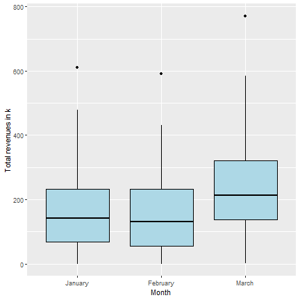
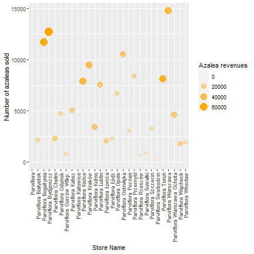
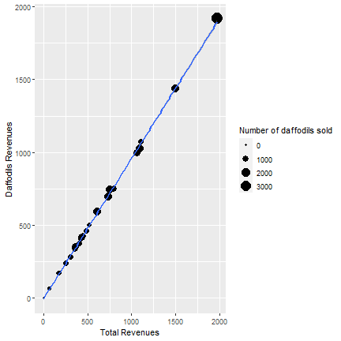
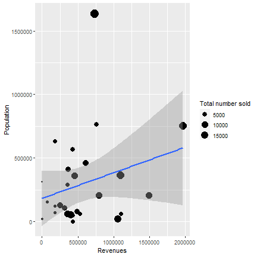

<!DOCTYPE html>
<html>
<head>
<style type="text/css">
.inline {
  background-color: #f7f7f7;
  border:solid 1px #B0B0B0;
}
.error {
	font-weight: bold;
	color: #FF0000;
}
.warning {
	font-weight: bold;
}
.message {
	font-style: italic;
}
.source, .output, .warning, .error, .message {
	padding: 0 1em;
  border:solid 1px #F7F7F7;
}
.source {
  background-color: #f5f5f5;
}
.left {
  text-align: left;
}
.right {
  text-align: right;
}
.center {
  text-align: center;
}
.hl.num {
  color: #AF0F91;
}
.hl.str {
  color: #317ECC;
}
.hl.com {
  color: #AD95AF;
  font-style: italic;
}
.hl.opt {
  color: #000000;
}
.hl.std {
  color: #585858;
}
.hl.kwa {
  color: #295F94;
  font-weight: bold;
}
.hl.kwb {
  color: #B05A65;
}
.hl.kwc {
  color: #55aa55;
}
.hl.kwd {
  color: #BC5A65;
  font-weight: bold;
}
</style>
  <script src="https://yihui.name/media/js/center-images.js"></script>
  <title>\title{\title{}}</title>
</head>
<body>

  <p>This report is automatically generated with the R
    package <a href="https://yihui.name/knitr/"><strong>knitr</strong></a>
    (version <code class="knitr inline">1.30</code>)
    .</p>

<div class="chunk" id="auto-report"><div class="rcode"><div class="source"><pre class="knitr r"><span class="hl com">#In case of any problems, please reopen with ISO-8859-2 encoding (issues with Polish characters)</span>
<span class="hl com">#loading libraries</span>
<span class="hl com">#If you don't have following libraries installed please install using: install.packages('name_of_library')</span>
<span class="hl kwd">library</span><span class="hl std">(tidyverse)</span>
<span class="hl kwd">library</span><span class="hl std">(readxl)</span>
<span class="hl kwd">library</span><span class="hl std">(foreach)</span>
<span class="hl kwd">library</span><span class="hl std">(sf)</span>
<span class="hl kwd">library</span><span class="hl std">(cartography)</span>
<span class="hl kwd">library</span><span class="hl std">(mapproj)</span>
<span class="hl kwd">library</span><span class="hl std">(maps)</span>
<span class="hl kwd">library</span><span class="hl std">(stringi)</span>
<span class="hl kwd">library</span><span class="hl std">(leaflet)</span>
<span class="hl kwd">Sys.setlocale</span><span class="hl std">(</span><span class="hl kwc">category</span><span class="hl std">=</span><span class="hl str">&quot;LC_ALL&quot;</span><span class="hl std">,</span> <span class="hl kwc">locale</span><span class="hl std">=</span><span class="hl str">&quot;Polish&quot;</span><span class="hl std">)</span>
</pre></div>
<div class="output"><pre class="knitr r">## [1] &quot;LC_COLLATE=Polish_Poland.1250;LC_CTYPE=Polish_Poland.1250;LC_MONETARY=Polish_Poland.1250;LC_NUMERIC=C;LC_TIME=Polish_Poland.1250&quot;
</pre></div>
<div class="source"><pre class="knitr r"><span class="hl com">#Reading the files</span>

<span class="hl com">#load csv files and prepare a data frame</span>
<span class="hl std">files</span> <span class="hl kwb">&lt;-</span> <span class="hl kwd">list.files</span><span class="hl std">(</span><span class="hl kwc">pattern</span> <span class="hl std">=</span> <span class="hl str">&quot;Summary.*.csv&quot;</span><span class="hl std">)</span>
<span class="hl std">df_summary</span> <span class="hl kwb">&lt;-</span><span class="hl std">files</span><span class="hl opt">%&gt;%</span><span class="hl std">set_names</span><span class="hl opt">%&gt;%</span><span class="hl kwd">map_dfr</span><span class="hl std">(read.csv,</span><span class="hl kwc">.id</span><span class="hl std">=</span><span class="hl str">'month'</span><span class="hl std">)</span>
<span class="hl com">#summing up values for different branches</span>
<span class="hl std">df_summary</span><span class="hl opt">$</span><span class="hl std">`STORE.NAME`</span> <span class="hl kwb">&lt;-</span> <span class="hl kwd">str_replace</span><span class="hl std">(df_summary</span><span class="hl opt">$</span><span class="hl std">`STORE.NAME`,</span> <span class="hl str">' GROSS'</span><span class="hl std">,</span> <span class="hl str">''</span><span class="hl std">)</span>
<span class="hl std">df_summary</span><span class="hl opt">$</span><span class="hl std">`STORE.NAME`</span> <span class="hl kwb">&lt;-</span> <span class="hl kwd">str_replace</span><span class="hl std">(df_summary</span><span class="hl opt">$</span><span class="hl std">`STORE.NAME`,</span> <span class="hl str">' OTHER'</span><span class="hl std">,</span> <span class="hl str">''</span><span class="hl std">)</span>
<span class="hl std">df_summary</span><span class="hl opt">$</span><span class="hl std">`STORE.NAME`</span> <span class="hl kwb">&lt;-</span> <span class="hl kwd">str_replace</span><span class="hl std">(df_summary</span><span class="hl opt">$</span><span class="hl std">`STORE.NAME`,</span> <span class="hl str">' RETAIL'</span><span class="hl std">,</span> <span class="hl str">''</span><span class="hl std">)</span>
<span class="hl std">df_summary</span> <span class="hl kwb">&lt;-</span> <span class="hl std">df_summary</span><span class="hl opt">%&gt;%</span><span class="hl kwd">group_by</span><span class="hl std">(month,STORE.NAME )</span><span class="hl opt">%&gt;%</span><span class="hl kwd">summarise_all</span><span class="hl std">(</span><span class="hl kwc">.funs</span> <span class="hl std">= sum)</span>
<span class="hl com">#creating month column</span>
<span class="hl std">x</span><span class="hl kwb">=</span><span class="hl kwd">foreach</span><span class="hl std">(</span><span class="hl kwc">i</span> <span class="hl std">= (df_summary</span><span class="hl opt">$</span><span class="hl std">month))</span> <span class="hl opt">%do%</span> <span class="hl kwd">strsplit</span><span class="hl std">(i,</span> <span class="hl str">' '</span><span class="hl std">)</span>
<span class="hl std">df_summary</span><span class="hl opt">$</span><span class="hl std">month</span> <span class="hl kwb">=</span> <span class="hl kwd">foreach</span><span class="hl std">(</span><span class="hl kwc">i</span> <span class="hl std">= x)</span><span class="hl opt">%do%</span> <span class="hl std">i[[</span><span class="hl num">1</span><span class="hl std">]][</span><span class="hl num">4</span><span class="hl std">]</span>
<span class="hl com">#renaming columns</span>
<span class="hl std">df_summary</span> <span class="hl kwb">&lt;-</span> <span class="hl std">df_summary</span><span class="hl opt">%&gt;%</span><span class="hl kwd">rename</span><span class="hl std">(</span><span class="hl str">'total_sold'</span> <span class="hl std">=</span> <span class="hl str">'COUNT.4'</span><span class="hl std">)</span>
<span class="hl kwd">colnames</span><span class="hl std">(df_summary)</span> <span class="hl kwb">=</span> <span class="hl kwd">tolower</span><span class="hl std">(</span><span class="hl kwd">colnames</span><span class="hl std">(df_summary))</span>
<span class="hl std">df_summary</span> <span class="hl kwb">&lt;-</span> <span class="hl std">df_summary</span><span class="hl opt">%&gt;%</span><span class="hl kwd">rename</span><span class="hl std">(</span><span class="hl str">'azaleas_sold'</span> <span class="hl std">=</span> <span class="hl str">'count'</span><span class="hl std">,</span>
                                  <span class="hl str">'begonias_sold'</span> <span class="hl std">=</span> <span class="hl str">'count.1'</span><span class="hl std">,</span>
                                  <span class="hl str">'carnations_sold'</span> <span class="hl std">=</span> <span class="hl str">'count.2'</span><span class="hl std">,</span>
                                  <span class="hl str">'daffodils_sold'</span> <span class="hl std">=</span> <span class="hl str">'count.3'</span><span class="hl std">)</span>
<span class="hl com">#reading stores excel file</span>
<span class="hl std">stores</span> <span class="hl kwb">&lt;-</span> <span class="hl kwd">read_excel</span><span class="hl std">(</span><span class="hl str">'Stores.xlsx'</span><span class="hl std">)</span>


<span class="hl com">#creating a varibale to match on</span>
<span class="hl std">stores[</span><span class="hl str">'STORE.NAME'</span><span class="hl std">]</span> <span class="hl kwb">=</span> <span class="hl kwd">tolower</span><span class="hl std">(</span><span class="hl kwd">gsub</span><span class="hl std">(</span><span class="hl str">'[łążźóęśććć楥ĄŚŚŚŚŚĆĆÓÓÓŁŁŁŁŻŻŹŹŹń]'</span><span class="hl std">,</span> <span class="hl str">'?'</span><span class="hl std">,stores</span><span class="hl opt">$</span><span class="hl std">`Store Name`))</span>
<span class="hl std">df_summary[</span><span class="hl str">'STORE.NAME'</span><span class="hl std">]</span> <span class="hl kwb">=</span> <span class="hl kwd">tolower</span><span class="hl std">(</span><span class="hl kwd">gsub</span><span class="hl std">(</span><span class="hl str">'[łążźóęśććć楥ĄŚŚŚŚŚĆĆÓÓÓŁŁŁŁŻŻŹŹŹń]'</span><span class="hl std">,</span><span class="hl str">'?'</span><span class="hl std">,df_summary</span><span class="hl opt">$</span><span class="hl std">store.name))</span>
<span class="hl com">#joining data</span>
<span class="hl std">stores_sales</span> <span class="hl kwb">=</span> <span class="hl kwd">left_join</span><span class="hl std">(df_summary,stores)</span>
</pre></div>
<div class="message"><pre class="knitr r">## Joining, by = &quot;STORE.NAME&quot;
</pre></div>
<div class="source"><pre class="knitr r"><span class="hl com">#adding Parviflora Świebodzin to our dataset</span>
<span class="hl kwa">for</span> <span class="hl std">(x</span> <span class="hl kwa">in</span> <span class="hl num">1</span><span class="hl opt">:</span><span class="hl kwd">length</span><span class="hl std">(stores_sales</span><span class="hl opt">$</span><span class="hl std">STORE.NAME)){</span>
  <span class="hl kwa">if</span><span class="hl std">(</span><span class="hl kwd">str_detect</span><span class="hl std">(stores_sales</span><span class="hl opt">$</span><span class="hl std">`STORE.NAME`[x],</span><span class="hl str">'iebodzin'</span><span class="hl std">)</span><span class="hl opt">==</span> <span class="hl num">TRUE</span><span class="hl std">){</span>
    <span class="hl std">stores_sales</span><span class="hl opt">$</span><span class="hl std">`Store Name`[x]</span> <span class="hl kwb">=</span> <span class="hl str">'Parviflora Świebodzin'</span>
    <span class="hl std">stores_sales</span><span class="hl opt">$</span><span class="hl std">`Store ID`[x]</span> <span class="hl kwb">=</span> <span class="hl num">530</span>

  <span class="hl std">}</span>
  <span class="hl kwa">if</span><span class="hl std">(</span><span class="hl kwd">is.na</span><span class="hl std">(stores_sales</span><span class="hl opt">$</span><span class="hl std">`Store Name`[x])</span> <span class="hl opt">==</span> <span class="hl num">TRUE</span><span class="hl std">){</span>
    <span class="hl std">stores_sales</span><span class="hl opt">$</span><span class="hl std">`Store Name`[x]</span> <span class="hl kwb">=</span> <span class="hl str">'Parviflora'</span>
    <span class="hl std">stores_sales</span><span class="hl opt">$</span><span class="hl std">`Store ID`[x]</span> <span class="hl kwb">=</span> <span class="hl num">0</span>

  <span class="hl std">}</span>
<span class="hl std">}</span>
<span class="hl com">#removing unnecessary columns</span>
<span class="hl std">data_withoout_daffodils</span> <span class="hl kwb">&lt;-</span> <span class="hl std">stores_sales</span> <span class="hl opt">%&gt;%</span> <span class="hl kwd">select</span><span class="hl std">(</span><span class="hl opt">-</span><span class="hl std">store.name,</span><span class="hl opt">-</span><span class="hl std">STORE.NAME)</span>

<span class="hl com">#Loading daffodil data</span>
<span class="hl kwa">for</span><span class="hl std">(a</span> <span class="hl kwa">in</span> <span class="hl kwd">excel_sheets</span><span class="hl std">(</span><span class="hl str">'Daffodils2020.xls'</span><span class="hl std">)){</span>
  <span class="hl kwd">write_csv</span><span class="hl std">(</span><span class="hl kwd">read_excel</span><span class="hl std">(</span><span class="hl str">'Daffodils2020.xls'</span><span class="hl std">,</span> <span class="hl kwc">sheet</span> <span class="hl std">= a),</span><span class="hl kwd">paste</span><span class="hl std">(</span><span class="hl str">'narcyz '</span><span class="hl std">,</span><span class="hl kwd">strsplit</span><span class="hl std">(a,</span> <span class="hl str">' '</span><span class="hl std">),</span><span class="hl str">' .csv'</span><span class="hl std">,</span><span class="hl kwc">sep</span><span class="hl std">=</span><span class="hl str">''</span><span class="hl std">))</span>
<span class="hl std">}</span>
</pre></div>
<div class="message"><pre class="knitr r">## New names:
## * `` -&gt; ...2
## * `` -&gt; ...3
## * `` -&gt; ...4
## * `` -&gt; ...5
</pre></div>
<div class="message"><pre class="knitr r">## New names:
## * `` -&gt; ...2
## * `` -&gt; ...3
## * `` -&gt; ...4
## * `` -&gt; ...5
## New names:
## * `` -&gt; ...2
## * `` -&gt; ...3
## * `` -&gt; ...4
## * `` -&gt; ...5
</pre></div>
<div class="source"><pre class="knitr r"><span class="hl std">daffiles</span> <span class="hl kwb">=</span> <span class="hl kwd">list.files</span><span class="hl std">(</span><span class="hl kwc">pattern</span><span class="hl std">=</span><span class="hl str">'narcyz .*.csv'</span><span class="hl std">)</span>
<span class="hl std">daffiles1</span> <span class="hl kwb">=</span> <span class="hl kwd">lapply</span><span class="hl std">(daffiles, read_csv)</span>
</pre></div>
<div class="message"><pre class="knitr r">## 
## -- Column specification ------------------------------------------------------------------
## cols(
##   `Parviflora Store Financial Report` = col_character(),
##   ...2 = col_character(),
##   ...3 = col_character(),
##   ...4 = col_character(),
##   ...5 = col_character()
## )
</pre></div>
<div class="message"><pre class="knitr r">## 
## -- Column specification ------------------------------------------------------------------
## cols(
##   `Parviflora Store Financial Report` = col_character(),
##   ...2 = col_character(),
##   ...3 = col_character(),
##   ...4 = col_character(),
##   ...5 = col_character()
## )
## 
## 
## -- Column specification ------------------------------------------------------------------
## cols(
##   `Parviflora Store Financial Report` = col_character(),
##   ...2 = col_character(),
##   ...3 = col_character(),
##   ...4 = col_character(),
##   ...5 = col_character()
## )
</pre></div>
<div class="source"><pre class="knitr r"><span class="hl com">#creating month column</span>
<span class="hl std">daffiles1</span> <span class="hl kwb">&lt;-</span><span class="hl std">daffiles</span><span class="hl opt">%&gt;%</span><span class="hl std">set_names</span><span class="hl opt">%&gt;%</span><span class="hl kwd">map_dfr</span><span class="hl std">(read.csv,</span><span class="hl kwc">.id</span><span class="hl std">=</span><span class="hl str">'month'</span><span class="hl std">)</span>
<span class="hl std">x</span><span class="hl kwb">=</span><span class="hl kwd">foreach</span><span class="hl std">(</span><span class="hl kwc">i</span> <span class="hl std">= (daffiles1</span><span class="hl opt">$</span><span class="hl std">month))</span> <span class="hl opt">%do%</span> <span class="hl kwd">strsplit</span><span class="hl std">(i,</span> <span class="hl str">' '</span><span class="hl std">)</span>
<span class="hl std">daffiles1</span><span class="hl opt">$</span><span class="hl std">month</span> <span class="hl kwb">=</span> <span class="hl kwd">foreach</span><span class="hl std">(</span><span class="hl kwc">i</span> <span class="hl std">= x)</span><span class="hl opt">%do%</span> <span class="hl std">i[[</span><span class="hl num">1</span><span class="hl std">]][</span><span class="hl num">2</span><span class="hl std">]</span>


<span class="hl com">#assigning names of the months</span>
<span class="hl kwa">for</span> <span class="hl std">(x</span> <span class="hl kwa">in</span> <span class="hl num">1</span><span class="hl opt">:</span><span class="hl kwd">length</span><span class="hl std">(daffiles1</span><span class="hl opt">$</span><span class="hl std">month)){</span>
  <span class="hl kwa">if</span> <span class="hl std">(</span><span class="hl kwd">str_detect</span><span class="hl std">(daffiles1</span><span class="hl opt">$</span><span class="hl std">month[x],</span> <span class="hl str">'Jan'</span><span class="hl std">)</span> <span class="hl opt">==</span> <span class="hl num">TRUE</span><span class="hl std">){</span>
    <span class="hl std">daffiles1</span><span class="hl opt">$</span><span class="hl std">month[x]</span> <span class="hl kwb">=</span> <span class="hl str">'January'</span>
  <span class="hl std">}</span>
  <span class="hl kwa">if</span> <span class="hl std">(</span><span class="hl kwd">str_detect</span><span class="hl std">(daffiles1</span><span class="hl opt">$</span><span class="hl std">month[x],</span> <span class="hl str">'Feb'</span><span class="hl std">)</span> <span class="hl opt">==</span> <span class="hl num">TRUE</span><span class="hl std">){</span>
    <span class="hl std">daffiles1</span><span class="hl opt">$</span><span class="hl std">month[x]</span> <span class="hl kwb">=</span> <span class="hl str">'February'</span>
  <span class="hl std">}</span>
  <span class="hl kwa">if</span> <span class="hl std">(</span><span class="hl kwd">str_detect</span><span class="hl std">(daffiles1</span><span class="hl opt">$</span><span class="hl std">month[x],</span> <span class="hl str">'Mar'</span><span class="hl std">)</span> <span class="hl opt">==</span> <span class="hl num">TRUE</span><span class="hl std">){</span>
    <span class="hl std">daffiles1</span><span class="hl opt">$</span><span class="hl std">month[x]</span> <span class="hl kwb">=</span> <span class="hl str">'March'</span>
  <span class="hl std">}</span>
  <span class="hl kwa">if</span> <span class="hl std">(</span><span class="hl kwd">str_detect</span><span class="hl std">(daffiles1</span><span class="hl opt">$</span><span class="hl std">month[x],</span> <span class="hl str">'Apr'</span><span class="hl std">)</span> <span class="hl opt">==</span> <span class="hl num">TRUE</span><span class="hl std">){</span>
    <span class="hl std">daffiles1</span><span class="hl opt">$</span><span class="hl std">month[x]</span> <span class="hl kwb">=</span> <span class="hl str">'April'</span>
  <span class="hl std">}</span>
  <span class="hl kwa">if</span> <span class="hl std">(</span><span class="hl kwd">str_detect</span><span class="hl std">(daffiles1</span><span class="hl opt">$</span><span class="hl std">month[x],</span> <span class="hl str">'May'</span><span class="hl std">)</span> <span class="hl opt">==</span> <span class="hl num">TRUE</span><span class="hl std">){</span>
    <span class="hl std">daffiles1</span><span class="hl opt">$</span><span class="hl std">month[x]</span> <span class="hl kwb">=</span> <span class="hl str">'May'</span>
  <span class="hl std">}</span>
  <span class="hl kwa">if</span> <span class="hl std">(</span><span class="hl kwd">str_detect</span><span class="hl std">(daffiles1</span><span class="hl opt">$</span><span class="hl std">month[x],</span> <span class="hl str">'Jun'</span><span class="hl std">)</span> <span class="hl opt">==</span> <span class="hl num">TRUE</span><span class="hl std">){</span>
    <span class="hl std">daffiles1</span><span class="hl opt">$</span><span class="hl std">month[x]</span> <span class="hl kwb">=</span> <span class="hl str">'June'</span>
  <span class="hl std">}</span>
  <span class="hl kwa">if</span> <span class="hl std">(</span><span class="hl kwd">str_detect</span><span class="hl std">(daffiles1</span><span class="hl opt">$</span><span class="hl std">month[x],</span> <span class="hl str">'Jul'</span><span class="hl std">)</span> <span class="hl opt">==</span> <span class="hl num">TRUE</span><span class="hl std">){</span>
    <span class="hl std">daffiles1</span><span class="hl opt">$</span><span class="hl std">month[x]</span> <span class="hl kwb">=</span> <span class="hl str">'July'</span>
  <span class="hl std">}</span>
  <span class="hl kwa">if</span> <span class="hl std">(</span><span class="hl kwd">str_detect</span><span class="hl std">(daffiles1</span><span class="hl opt">$</span><span class="hl std">month[x],</span> <span class="hl str">'Aug'</span><span class="hl std">)</span> <span class="hl opt">==</span> <span class="hl num">TRUE</span><span class="hl std">){</span>
    <span class="hl std">daffiles1</span><span class="hl opt">$</span><span class="hl std">month[x]</span> <span class="hl kwb">=</span> <span class="hl str">'August'</span>
  <span class="hl std">}</span>
  <span class="hl kwa">if</span> <span class="hl std">(</span><span class="hl kwd">str_detect</span><span class="hl std">(daffiles1</span><span class="hl opt">$</span><span class="hl std">month[x],</span> <span class="hl str">'Sep'</span><span class="hl std">)</span> <span class="hl opt">==</span> <span class="hl num">TRUE</span><span class="hl std">){</span>
    <span class="hl std">daffiles1</span><span class="hl opt">$</span><span class="hl std">month[x]</span> <span class="hl kwb">=</span> <span class="hl str">'September'</span>
  <span class="hl std">}</span>
  <span class="hl kwa">if</span> <span class="hl std">(</span><span class="hl kwd">str_detect</span><span class="hl std">(daffiles1</span><span class="hl opt">$</span><span class="hl std">month[x],</span> <span class="hl str">'Oct'</span><span class="hl std">)</span> <span class="hl opt">==</span> <span class="hl num">TRUE</span><span class="hl std">){</span>
    <span class="hl std">daffiles1</span><span class="hl opt">$</span><span class="hl std">month[x]</span> <span class="hl kwb">=</span> <span class="hl str">'October'</span>
  <span class="hl std">}</span>
  <span class="hl kwa">if</span> <span class="hl std">(</span><span class="hl kwd">str_detect</span><span class="hl std">(daffiles1</span><span class="hl opt">$</span><span class="hl std">month[x],</span> <span class="hl str">'Nov'</span><span class="hl std">)</span> <span class="hl opt">==</span> <span class="hl num">TRUE</span><span class="hl std">){</span>
    <span class="hl std">daffiles1</span><span class="hl opt">$</span><span class="hl std">month[x]</span> <span class="hl kwb">=</span> <span class="hl str">'November'</span>
  <span class="hl std">}</span>
  <span class="hl kwa">if</span> <span class="hl std">(</span><span class="hl kwd">str_detect</span><span class="hl std">(daffiles1</span><span class="hl opt">$</span><span class="hl std">month[x],</span> <span class="hl str">'Dec'</span><span class="hl std">)</span> <span class="hl opt">==</span> <span class="hl num">TRUE</span><span class="hl std">){</span>
    <span class="hl std">daffiles1</span><span class="hl opt">$</span><span class="hl std">month[x]</span> <span class="hl kwb">=</span> <span class="hl str">'December'</span>
  <span class="hl std">}</span>
<span class="hl std">}</span>

<span class="hl com">#creating two DFs with a) the totals, and b) store IDs</span>

<span class="hl std">daffodilsdata</span><span class="hl kwb">&lt;-</span> <span class="hl std">daffiles1</span><span class="hl opt">%&gt;%</span>
  <span class="hl kwd">filter</span><span class="hl std">(daffiles1[,</span><span class="hl num">2</span><span class="hl std">]</span><span class="hl opt">==</span><span class="hl str">'Totals'</span> <span class="hl opt">|</span> <span class="hl std">daffiles1[,</span><span class="hl num">2</span><span class="hl std">]</span> <span class="hl opt">==</span> <span class="hl str">'Submitting Location'</span><span class="hl std">)</span><span class="hl opt">%&gt;%</span> <span class="hl kwd">select</span><span class="hl std">(...2,...3, month)</span><span class="hl opt">%&gt;%</span>
  <span class="hl kwd">rename</span><span class="hl std">(</span><span class="hl kwc">daffodils</span> <span class="hl std">=</span> <span class="hl str">'...2'</span><span class="hl std">,</span> <span class="hl kwc">daffodils_sold</span><span class="hl std">=</span><span class="hl str">'...3'</span><span class="hl std">)</span>
<span class="hl std">store_id</span> <span class="hl kwb">&lt;-</span> <span class="hl std">daffiles1</span><span class="hl opt">%&gt;%</span>
  <span class="hl kwd">filter</span><span class="hl std">(daffiles1[,</span><span class="hl num">2</span><span class="hl std">]</span><span class="hl opt">==</span><span class="hl str">'Totalws'</span> <span class="hl opt">|</span> <span class="hl std">daffiles1[,</span><span class="hl num">2</span><span class="hl std">]</span> <span class="hl opt">==</span> <span class="hl str">'Submitting Location:'</span><span class="hl std">)</span><span class="hl opt">%&gt;%</span> <span class="hl kwd">select</span><span class="hl std">(month,...2, ...3)</span><span class="hl opt">%&gt;%</span>
  <span class="hl kwd">rename</span><span class="hl std">(</span><span class="hl str">'Submitting Location'</span> <span class="hl std">=</span> <span class="hl str">'...2'</span><span class="hl std">,</span> <span class="hl kwc">`StoreID`</span> <span class="hl std">=</span> <span class="hl str">'...3'</span><span class="hl std">)</span>

<span class="hl com">#merging totals and store IDs together. </span>
<span class="hl std">daffodilsdata[</span><span class="hl str">'submitting location'</span><span class="hl std">]</span> <span class="hl kwb">=</span> <span class="hl std">store_id</span><span class="hl opt">$</span><span class="hl std">`Submitting Location`</span>
<span class="hl std">daffodilsdata[</span><span class="hl str">'Store ID'</span><span class="hl std">]</span> <span class="hl kwb">=</span> <span class="hl std">store_id</span><span class="hl opt">$</span><span class="hl std">StoreID</span>
<span class="hl std">daffodilsdata</span><span class="hl opt">$</span><span class="hl std">`Store ID`</span> <span class="hl kwb">=</span> <span class="hl kwd">as.numeric</span><span class="hl std">(daffodilsdata</span><span class="hl opt">$</span><span class="hl std">`Store ID`)</span>
<span class="hl std">daffodilsdata</span><span class="hl opt">$</span><span class="hl std">daffodils</span> <span class="hl kwb">=</span> <span class="hl kwd">round</span><span class="hl std">(</span><span class="hl kwd">as.numeric</span><span class="hl std">(daffodilsdata</span><span class="hl opt">$</span><span class="hl std">daffodils),</span><span class="hl num">2</span><span class="hl std">)</span>
<span class="hl std">daffodilsdata</span><span class="hl opt">$</span><span class="hl std">daffodils_sold</span> <span class="hl kwb">=</span> <span class="hl kwd">as.numeric</span><span class="hl std">(daffodilsdata</span><span class="hl opt">$</span><span class="hl std">daffodils_sold)</span>
<span class="hl std">data_withoout_daffodils</span> <span class="hl kwb">&lt;-</span> <span class="hl std">data_withoout_daffodils</span><span class="hl opt">%&gt;%</span><span class="hl kwd">select</span><span class="hl std">(</span><span class="hl opt">-</span><span class="hl std">daffodil,</span><span class="hl opt">-</span><span class="hl std">daffodils_sold)</span>
<span class="hl com">#examining types of columns</span>
<span class="hl kwd">str</span><span class="hl std">(daffodilsdata)</span>
</pre></div>
<div class="output"><pre class="knitr r">## 'data.frame':	71 obs. of  5 variables:
##  $ daffodils          : num  179535 129635 46620 136566 2874 ...
##  $ daffodils_sold     : num  495 200 30 146 227 145 28 119 106 110 ...
##  $ month              :List of 71
##   ..$ : chr &quot;February&quot;
##   ..$ : chr &quot;February&quot;
##   ..$ : chr &quot;February&quot;
##   ..$ : chr &quot;February&quot;
##   ..$ : chr &quot;February&quot;
##   ..$ : chr &quot;February&quot;
##   ..$ : chr &quot;February&quot;
##   ..$ : chr &quot;February&quot;
##   ..$ : chr &quot;February&quot;
##   ..$ : chr &quot;February&quot;
##   ..$ : chr &quot;February&quot;
##   ..$ : chr &quot;February&quot;
##   ..$ : chr &quot;February&quot;
##   ..$ : chr &quot;February&quot;
##   ..$ : chr &quot;February&quot;
##   ..$ : chr &quot;February&quot;
##   ..$ : chr &quot;February&quot;
##   ..$ : chr &quot;February&quot;
##   ..$ : chr &quot;February&quot;
##   ..$ : chr &quot;February&quot;
##   ..$ : chr &quot;February&quot;
##   ..$ : chr &quot;February&quot;
##   ..$ : chr &quot;January&quot;
##   ..$ : chr &quot;January&quot;
##   ..$ : chr &quot;January&quot;
##   ..$ : chr &quot;January&quot;
##   ..$ : chr &quot;January&quot;
##   ..$ : chr &quot;January&quot;
##   ..$ : chr &quot;January&quot;
##   ..$ : chr &quot;January&quot;
##   ..$ : chr &quot;January&quot;
##   ..$ : chr &quot;January&quot;
##   ..$ : chr &quot;January&quot;
##   ..$ : chr &quot;January&quot;
##   ..$ : chr &quot;January&quot;
##   ..$ : chr &quot;January&quot;
##   ..$ : chr &quot;January&quot;
##   ..$ : chr &quot;January&quot;
##   ..$ : chr &quot;January&quot;
##   ..$ : chr &quot;January&quot;
##   ..$ : chr &quot;January&quot;
##   ..$ : chr &quot;January&quot;
##   ..$ : chr &quot;January&quot;
##   ..$ : chr &quot;January&quot;
##   ..$ : chr &quot;March&quot;
##   ..$ : chr &quot;March&quot;
##   ..$ : chr &quot;March&quot;
##   ..$ : chr &quot;March&quot;
##   ..$ : chr &quot;March&quot;
##   ..$ : chr &quot;March&quot;
##   ..$ : chr &quot;March&quot;
##   ..$ : chr &quot;March&quot;
##   ..$ : chr &quot;March&quot;
##   ..$ : chr &quot;March&quot;
##   ..$ : chr &quot;March&quot;
##   ..$ : chr &quot;March&quot;
##   ..$ : chr &quot;March&quot;
##   ..$ : chr &quot;March&quot;
##   ..$ : chr &quot;March&quot;
##   ..$ : chr &quot;March&quot;
##   ..$ : chr &quot;March&quot;
##   ..$ : chr &quot;March&quot;
##   ..$ : chr &quot;March&quot;
##   ..$ : chr &quot;March&quot;
##   ..$ : chr &quot;March&quot;
##   ..$ : chr &quot;March&quot;
##   ..$ : chr &quot;March&quot;
##   ..$ : chr &quot;March&quot;
##   ..$ : chr &quot;March&quot;
##   ..$ : chr &quot;March&quot;
##   ..$ : chr &quot;March&quot;
##  $ submitting location: chr  &quot;1040859043&quot; &quot;1044852440&quot; &quot;1046339230&quot; &quot;1049414485&quot; ...
##  $ Store ID           : num  430 320 330 340 345 510 350 360 210 150 ...
</pre></div>
<div class="source"><pre class="knitr r"><span class="hl com">#joining daffodils.xls and parviflora files together</span>
<span class="hl std">full</span> <span class="hl kwb">=</span> <span class="hl kwd">left_join</span><span class="hl std">(data_withoout_daffodils, daffodilsdata,</span> <span class="hl kwc">by</span><span class="hl std">=</span><span class="hl kwd">c</span><span class="hl std">(</span><span class="hl str">'Store ID'</span><span class="hl std">,</span> <span class="hl str">'month'</span><span class="hl std">))</span>
<span class="hl com">#sorting the columns</span>
<span class="hl std">full</span> <span class="hl kwb">&lt;-</span> <span class="hl std">full</span><span class="hl opt">%&gt;%</span> <span class="hl kwd">select</span><span class="hl std">(month, store..,`submitting location`,`Store ID`,</span>
                       <span class="hl std">`Store Name`, daffodils_sold, daffodils,</span> <span class="hl kwd">everything</span><span class="hl std">())</span>

<span class="hl com">#Changing NA in daffodils and daffodils_sold to blanks</span>
<span class="hl kwa">for</span><span class="hl std">(x</span> <span class="hl kwa">in</span> <span class="hl num">1</span><span class="hl opt">:</span><span class="hl kwd">length</span><span class="hl std">(full</span><span class="hl opt">$</span><span class="hl std">daffodils)){</span>
  <span class="hl kwa">if</span><span class="hl std">(</span><span class="hl kwd">is.na</span><span class="hl std">(full</span><span class="hl opt">$</span><span class="hl std">daffodils[x])</span> <span class="hl opt">==</span> <span class="hl num">TRUE</span><span class="hl std">){</span>
    <span class="hl std">full</span><span class="hl opt">$</span><span class="hl std">daffodils[x]</span> <span class="hl kwb">=</span> <span class="hl num">0</span>
    <span class="hl std">full</span><span class="hl opt">$</span><span class="hl std">daffodils_sold[x]</span> <span class="hl kwb">=</span> <span class="hl num">0</span>
  <span class="hl std">}</span>
<span class="hl std">}</span>


<span class="hl com">#fixing the total and total sold columns</span>
<span class="hl std">full[</span><span class="hl str">'total'</span><span class="hl std">]</span> <span class="hl kwb">=</span> <span class="hl std">full</span><span class="hl opt">$</span><span class="hl std">total</span> <span class="hl opt">+</span> <span class="hl std">full</span><span class="hl opt">$</span><span class="hl std">daffodils</span>
<span class="hl std">full[</span><span class="hl str">'total_sold'</span><span class="hl std">]</span> <span class="hl kwb">=</span> <span class="hl std">full</span><span class="hl opt">$</span><span class="hl std">total_sold</span><span class="hl opt">+</span><span class="hl std">full</span><span class="hl opt">$</span><span class="hl std">daffodils_sold</span>
<span class="hl com">#clean dataset</span>

<span class="hl std">month_number</span> <span class="hl kwb">=</span> <span class="hl kwd">data.frame</span><span class="hl std">(</span><span class="hl kwc">number_of_month</span> <span class="hl std">=</span> <span class="hl kwd">c</span><span class="hl std">(</span><span class="hl num">1</span><span class="hl std">,</span><span class="hl num">2</span><span class="hl std">,</span><span class="hl num">3</span><span class="hl std">,</span><span class="hl num">4</span><span class="hl std">,</span><span class="hl num">5</span><span class="hl std">,</span><span class="hl num">6</span><span class="hl std">,</span><span class="hl num">7</span><span class="hl std">,</span><span class="hl num">8</span><span class="hl std">,</span><span class="hl num">9</span><span class="hl std">,</span><span class="hl num">10</span><span class="hl std">,</span><span class="hl num">11</span><span class="hl std">,</span><span class="hl num">12</span><span class="hl std">),</span>
                          <span class="hl kwc">month</span> <span class="hl std">=</span> <span class="hl kwd">c</span><span class="hl std">(</span><span class="hl str">'January'</span><span class="hl std">,</span> <span class="hl str">'February'</span><span class="hl std">,</span> <span class="hl str">'March'</span><span class="hl std">,</span> <span class="hl str">'April'</span><span class="hl std">,</span> <span class="hl str">'May'</span><span class="hl std">,</span>
                                    <span class="hl str">'June'</span><span class="hl std">,</span> <span class="hl str">'July'</span><span class="hl std">,</span> <span class="hl str">'August'</span><span class="hl std">,</span> <span class="hl str">'September'</span><span class="hl std">,</span> <span class="hl str">'October'</span><span class="hl std">,</span>
                                    <span class="hl str">'November'</span><span class="hl std">,</span> <span class="hl str">'December'</span><span class="hl std">))</span>
<span class="hl std">summary_of_sales</span><span class="hl kwb">=</span><span class="hl kwd">merge</span><span class="hl std">(month_number, full,</span> <span class="hl kwc">by</span><span class="hl std">=</span><span class="hl kwd">c</span><span class="hl std">(</span><span class="hl str">'month'</span><span class="hl std">))</span>
<span class="hl std">summary_of_sales</span> <span class="hl kwb">&lt;-</span><span class="hl std">summary_of_sales</span><span class="hl opt">%&gt;%</span> <span class="hl kwd">select</span><span class="hl std">(number_of_month, month,</span> <span class="hl kwd">everything</span><span class="hl std">())</span>
<span class="hl std">summary_of_sales</span> <span class="hl kwb">&lt;-</span><span class="hl std">summary_of_sales</span><span class="hl opt">%&gt;%</span> <span class="hl kwd">arrange</span><span class="hl std">(number_of_month)</span><span class="hl opt">%&gt;%</span><span class="hl kwd">select</span><span class="hl std">(</span><span class="hl opt">-</span><span class="hl std">number_of_month)</span>


<span class="hl com">#view the final data</span>
<span class="hl kwd">view</span><span class="hl std">(summary_of_sales)</span>

<span class="hl com">#Summary by month</span>
<span class="hl std">x</span> <span class="hl kwb">=</span> <span class="hl std">summary_of_sales</span><span class="hl opt">%&gt;%</span><span class="hl kwd">select</span><span class="hl std">(total, month, total_sold)</span><span class="hl opt">%&gt;%</span><span class="hl kwd">group_by</span><span class="hl std">(month)</span><span class="hl opt">%&gt;%</span><span class="hl kwd">summarise_all</span><span class="hl std">(</span><span class="hl kwc">.funs</span><span class="hl std">=mean)</span>

<span class="hl com">#Stores and totals on bar chart</span>

<span class="hl std">month_fac</span> <span class="hl kwb">&lt;-</span> <span class="hl kwd">factor</span><span class="hl std">(summary_of_sales</span><span class="hl opt">$</span><span class="hl std">month,</span> <span class="hl kwc">levels</span> <span class="hl std">= month.name)</span>
<span class="hl kwd">ggplot</span><span class="hl std">(</span><span class="hl kwc">data</span> <span class="hl std">= summary_of_sales)</span> <span class="hl opt">+</span>
  <span class="hl kwd">geom_bar</span><span class="hl std">(</span><span class="hl kwc">mapping</span> <span class="hl std">=</span> <span class="hl kwd">aes</span><span class="hl std">(</span><span class="hl kwc">x</span> <span class="hl std">= `Store Name`,</span> <span class="hl kwc">y</span> <span class="hl std">= total</span><span class="hl opt">/</span><span class="hl num">1000</span><span class="hl std">,</span> <span class="hl kwc">fill</span> <span class="hl std">= month_fac),</span> <span class="hl kwc">stat</span> <span class="hl std">=</span> <span class="hl str">&quot;identity&quot;</span><span class="hl std">)</span> <span class="hl opt">+</span>
  <span class="hl kwd">theme</span><span class="hl std">(</span><span class="hl kwc">axis.text.x</span> <span class="hl std">=</span> <span class="hl kwd">element_text</span><span class="hl std">(</span><span class="hl kwc">angle</span> <span class="hl std">=</span> <span class="hl num">90</span><span class="hl std">,</span> <span class="hl kwc">vjust</span> <span class="hl std">=</span> <span class="hl num">0.5</span><span class="hl std">,</span> <span class="hl kwc">hjust</span><span class="hl std">=</span><span class="hl num">1</span><span class="hl std">))</span> <span class="hl opt">+</span>
  <span class="hl kwd">scale_fill_brewer</span><span class="hl std">(</span><span class="hl kwc">palette</span><span class="hl std">=</span><span class="hl str">&quot;BuPu&quot;</span><span class="hl std">)</span><span class="hl opt">+</span><span class="hl kwd">ylab</span><span class="hl std">(</span><span class="hl str">'Total Revenues'</span><span class="hl std">)</span><span class="hl opt">+</span><span class="hl kwd">labs</span><span class="hl std">(</span><span class="hl kwc">fill</span> <span class="hl std">=</span> <span class="hl str">'Month'</span><span class="hl std">)</span>
</pre></div>
</div><div class="rimage center"></div><div class="rcode">
<div class="source"><pre class="knitr r"><span class="hl com">#Box plot revenues in each month</span>
<span class="hl kwd">ggplot</span><span class="hl std">(</span><span class="hl kwc">data</span> <span class="hl std">= summary_of_sales,</span> <span class="hl kwc">mapping</span> <span class="hl std">=</span> <span class="hl kwd">aes</span> <span class="hl std">(</span><span class="hl kwc">x</span><span class="hl std">=month_fac,</span> <span class="hl kwc">y</span><span class="hl std">=total</span><span class="hl opt">/</span><span class="hl num">1000</span><span class="hl std">))</span> <span class="hl opt">+</span>
  <span class="hl kwd">geom_boxplot</span><span class="hl std">(</span><span class="hl kwc">col</span> <span class="hl std">=</span> <span class="hl str">&quot;black&quot;</span><span class="hl std">,</span> <span class="hl kwc">fill</span> <span class="hl std">=</span> <span class="hl str">&quot;lightblue&quot;</span><span class="hl std">)</span> <span class="hl opt">+</span> <span class="hl kwd">ylab</span><span class="hl std">(</span><span class="hl str">'Total revenues in k'</span><span class="hl std">)</span> <span class="hl opt">+</span> <span class="hl kwd">xlab</span><span class="hl std">(</span><span class="hl str">'Month'</span><span class="hl std">)</span>
</pre></div>
</div><div class="rimage center"></div><div class="rcode">
<div class="source"><pre class="knitr r"><span class="hl com">#Q1 summary</span>
<span class="hl std">group_summary</span> <span class="hl kwb">&lt;-</span> <span class="hl std">summary_of_sales</span><span class="hl opt">%&gt;%</span><span class="hl kwd">select</span><span class="hl std">(</span><span class="hl opt">-</span><span class="hl std">month,</span> <span class="hl opt">-</span><span class="hl std">store..,</span><span class="hl opt">-</span><span class="hl std">`submitting location`)</span>
<span class="hl std">group_summary</span> <span class="hl kwb">&lt;-</span> <span class="hl std">group_summary</span><span class="hl opt">%&gt;%</span><span class="hl kwd">group_by</span><span class="hl std">(`Store ID`,`Store Name`)</span><span class="hl opt">%&gt;%</span><span class="hl kwd">summarise_all</span><span class="hl std">(</span><span class="hl kwc">.funs</span> <span class="hl std">= sum)</span>

<span class="hl com">#Cities database</span>
<span class="hl std">data</span> <span class="hl kwb">&lt;-</span> <span class="hl std">world.cities</span> <span class="hl opt">%&gt;%</span> <span class="hl kwd">filter</span><span class="hl std">(country.etc</span><span class="hl opt">==</span><span class="hl str">&quot;Poland&quot;</span><span class="hl std">)</span>
<span class="hl kwd">names</span><span class="hl std">(data)</span> <span class="hl kwb">&lt;-</span> <span class="hl kwd">c</span><span class="hl std">(</span><span class="hl str">&quot;name&quot;</span><span class="hl std">,</span> <span class="hl str">&quot;country.etc&quot;</span><span class="hl std">,</span> <span class="hl str">&quot;pop&quot;</span><span class="hl std">,</span> <span class="hl str">&quot;lat&quot;</span><span class="hl std">,</span> <span class="hl str">&quot;long&quot;</span><span class="hl std">,</span> <span class="hl str">&quot;capital&quot;</span><span class="hl std">)</span>

<span class="hl com">#Adding missing locations</span>
<span class="hl std">extra_data</span> <span class="hl kwb">&lt;-</span> <span class="hl kwd">data.frame</span> <span class="hl std">(</span><span class="hl kwc">name</span> <span class="hl std">=</span> <span class="hl kwd">c</span><span class="hl std">(</span><span class="hl str">&quot;Warszawa Ochota&quot;</span><span class="hl std">,</span> <span class="hl str">&quot;Przemysl&quot;</span><span class="hl std">,</span> <span class="hl str">&quot;Chelm&quot;</span><span class="hl std">,</span><span class="hl str">&quot;Wachock&quot;</span><span class="hl std">),</span>
                        <span class="hl kwc">country.etc</span> <span class="hl std">=</span> <span class="hl kwd">c</span><span class="hl std">(</span><span class="hl str">'Poland'</span><span class="hl std">,</span> <span class="hl str">'Poland'</span><span class="hl std">,</span><span class="hl str">'Poland'</span><span class="hl std">,</span><span class="hl str">'Poland'</span><span class="hl std">),</span>
                        <span class="hl kwc">pop</span> <span class="hl std">=</span> <span class="hl kwd">c</span><span class="hl std">(</span><span class="hl num">82484</span><span class="hl std">,</span> <span class="hl num">60442</span><span class="hl std">,</span> <span class="hl num">63949</span><span class="hl std">,</span> <span class="hl num">2795</span><span class="hl std">),</span>
                        <span class="hl kwc">lat</span> <span class="hl std">=</span> <span class="hl kwd">c</span><span class="hl std">(</span><span class="hl num">52.22</span><span class="hl std">,</span> <span class="hl num">49.48</span><span class="hl std">,</span> <span class="hl num">51.09</span><span class="hl std">,</span> <span class="hl num">51.05</span><span class="hl std">),</span>
                        <span class="hl kwc">long</span> <span class="hl std">=</span> <span class="hl kwd">c</span><span class="hl std">(</span><span class="hl num">20.98</span><span class="hl std">,</span><span class="hl num">22.47</span><span class="hl std">,</span> <span class="hl num">23.29</span><span class="hl std">,</span> <span class="hl num">21.01</span> <span class="hl std">),</span>
                        <span class="hl kwc">capital</span> <span class="hl std">=</span> <span class="hl kwd">c</span><span class="hl std">(</span><span class="hl str">'0'</span><span class="hl std">,</span> <span class="hl str">'0'</span><span class="hl std">,</span> <span class="hl str">'0'</span><span class="hl std">,</span><span class="hl str">'0'</span><span class="hl std">))</span>
<span class="hl std">new_data</span> <span class="hl kwb">&lt;-</span> <span class="hl kwd">rbind</span><span class="hl std">(data, extra_data)</span>

<span class="hl std">group_summary[</span><span class="hl str">'name'</span><span class="hl std">]</span> <span class="hl kwb">=</span> <span class="hl kwd">gsub</span><span class="hl std">(</span><span class="hl str">'Parviflora '</span><span class="hl std">,</span><span class="hl str">''</span><span class="hl std">,group_summary</span><span class="hl opt">$</span><span class="hl std">`Store Name`)</span>
<span class="hl std">group_summary</span><span class="hl opt">$</span><span class="hl std">name</span><span class="hl kwb">&lt;-</span> <span class="hl kwd">stri_trans_general</span><span class="hl std">(group_summary</span><span class="hl opt">$</span><span class="hl std">name,</span> <span class="hl str">&quot;Latin-ASCII&quot;</span><span class="hl std">)</span>
<span class="hl std">group_summary</span><span class="hl opt">$</span><span class="hl std">name[group_summary</span><span class="hl opt">$</span><span class="hl std">name</span> <span class="hl opt">==</span> <span class="hl str">'Warszawa'</span><span class="hl std">]</span> <span class="hl kwb">=</span> <span class="hl str">'Warsaw'</span>
<span class="hl std">group_summary</span><span class="hl opt">$</span><span class="hl std">name[group_summary</span><span class="hl opt">$</span><span class="hl std">name</span> <span class="hl opt">==</span> <span class="hl str">'Krakow'</span><span class="hl std">]</span> <span class="hl kwb">=</span> <span class="hl str">'Cracow'</span>
<span class="hl std">group_summary</span><span class="hl opt">$</span><span class="hl std">name[group_summary</span><span class="hl opt">$</span><span class="hl std">name</span> <span class="hl opt">==</span> <span class="hl str">'Gorzow Wlkp.'</span><span class="hl std">]</span> <span class="hl kwb">=</span> <span class="hl str">'Gorzow Wielkopolski'</span>
<span class="hl std">analysis</span> <span class="hl kwb">=</span> <span class="hl kwd">merge</span><span class="hl std">(group_summary, new_data)</span>

<span class="hl com"># Create a color palette with handmade bins.</span>
<span class="hl std">mybins</span> <span class="hl kwb">&lt;-</span> <span class="hl kwd">seq</span><span class="hl std">(</span><span class="hl num">0</span><span class="hl std">,</span> <span class="hl num">2000000</span><span class="hl std">,</span><span class="hl kwc">by</span><span class="hl std">=</span><span class="hl num">200000</span><span class="hl std">)</span>
<span class="hl std">mypalette</span> <span class="hl kwb">&lt;-</span> <span class="hl kwd">colorBin</span><span class="hl std">(</span> <span class="hl kwc">palette</span><span class="hl std">=</span><span class="hl str">&quot;magma&quot;</span><span class="hl std">,</span> <span class="hl kwc">domain</span><span class="hl std">=analysis</span><span class="hl opt">$</span><span class="hl std">total,</span> <span class="hl kwc">na.color</span><span class="hl std">=</span><span class="hl str">&quot;transparent&quot;</span><span class="hl std">,</span> <span class="hl kwc">bins</span><span class="hl std">=mybins)</span>
<span class="hl std">all</span>
</pre></div>
<div class="output"><pre class="knitr r">## function (..., na.rm = FALSE)  .Primitive(&quot;all&quot;)
</pre></div>
<div class="source"><pre class="knitr r"><span class="hl std">mytext</span> <span class="hl kwb">&lt;-</span> <span class="hl kwd">paste</span><span class="hl std">(</span>
  <span class="hl str">&quot;total_sold: &quot;</span><span class="hl std">, analysis</span><span class="hl opt">$</span><span class="hl std">total_sold,</span> <span class="hl str">&quot;&lt;br/&gt;&quot;</span><span class="hl std">,</span>
  <span class="hl str">&quot;total: &quot;</span><span class="hl std">, analysis</span><span class="hl opt">$</span><span class="hl std">total,</span> <span class="hl str">&quot;&lt;br/&gt;&quot;</span><span class="hl std">,</span>
  <span class="hl str">&quot;store: &quot;</span><span class="hl std">, analysis</span><span class="hl opt">$</span><span class="hl std">`Store Name`,</span> <span class="hl kwc">sep</span><span class="hl std">=</span><span class="hl str">&quot;&quot;</span><span class="hl std">)</span> <span class="hl opt">%&gt;%</span>
  <span class="hl kwd">lapply</span><span class="hl std">(htmltools</span><span class="hl opt">::</span><span class="hl std">HTML)</span>


<span class="hl com"># Final Map</span>
<span class="hl std">map</span> <span class="hl kwb">&lt;-</span> <span class="hl kwd">leaflet</span><span class="hl std">(analysis)</span> <span class="hl opt">%&gt;%</span>
  <span class="hl kwd">addTiles</span><span class="hl std">()</span> <span class="hl opt">%&gt;%</span>
  <span class="hl kwd">setView</span><span class="hl std">(</span> <span class="hl kwc">lat</span><span class="hl std">=</span><span class="hl num">51</span><span class="hl std">,</span> <span class="hl kwc">lng</span><span class="hl std">=</span><span class="hl num">19</span> <span class="hl std">,</span> <span class="hl kwc">zoom</span><span class="hl std">=</span><span class="hl num">6</span><span class="hl std">)</span> <span class="hl opt">%&gt;%</span>
  <span class="hl kwd">addProviderTiles</span><span class="hl std">(</span><span class="hl str">&quot;CartoDB.Voyager&quot;</span><span class="hl std">)</span> <span class="hl opt">%&gt;%</span>
  <span class="hl kwd">addCircleMarkers</span><span class="hl std">(</span><span class="hl opt">~</span><span class="hl std">long,</span> <span class="hl opt">~</span><span class="hl std">lat,</span>
                   <span class="hl kwc">fillColor</span> <span class="hl std">=</span> <span class="hl opt">~</span><span class="hl kwd">mypalette</span><span class="hl std">(total),</span> <span class="hl kwc">fillOpacity</span> <span class="hl std">=</span> <span class="hl num">0.7</span><span class="hl std">,</span> <span class="hl kwc">color</span><span class="hl std">=</span><span class="hl str">&quot;red&quot;</span><span class="hl std">,</span> <span class="hl kwc">radius</span><span class="hl std">=</span><span class="hl num">10</span><span class="hl std">,</span> <span class="hl kwc">stroke</span><span class="hl std">=</span><span class="hl num">FALSE</span><span class="hl std">,</span>
                   <span class="hl kwc">label</span> <span class="hl std">= mytext,</span>
                   <span class="hl kwc">labelOptions</span> <span class="hl std">=</span> <span class="hl kwd">labelOptions</span><span class="hl std">(</span> <span class="hl kwc">style</span> <span class="hl std">=</span> <span class="hl kwd">list</span><span class="hl std">(</span><span class="hl str">&quot;font-weight&quot;</span> <span class="hl std">=</span> <span class="hl str">&quot;normal&quot;</span><span class="hl std">,</span> <span class="hl kwc">padding</span> <span class="hl std">=</span> <span class="hl str">&quot;3px 8px&quot;</span><span class="hl std">),</span> <span class="hl kwc">textsize</span> <span class="hl std">=</span> <span class="hl str">&quot;13px&quot;</span><span class="hl std">,</span> <span class="hl kwc">direction</span> <span class="hl std">=</span> <span class="hl str">&quot;auto&quot;</span><span class="hl std">)</span>
  <span class="hl std">)</span> <span class="hl opt">%&gt;%</span>
  <span class="hl kwd">addLegend</span><span class="hl std">(</span> <span class="hl kwc">pal</span><span class="hl std">=mypalette,</span> <span class="hl kwc">values</span><span class="hl std">=</span><span class="hl opt">~</span><span class="hl std">total,</span> <span class="hl kwc">opacity</span><span class="hl std">=</span><span class="hl num">0.9</span><span class="hl std">,</span> <span class="hl kwc">title</span> <span class="hl std">=</span> <span class="hl str">&quot;total&quot;</span><span class="hl std">,</span> <span class="hl kwc">position</span> <span class="hl std">=</span> <span class="hl str">&quot;bottomright&quot;</span> <span class="hl std">)</span>
</pre></div>
<div class="warning"><pre class="knitr r">## Warning in mypalette(total): Some values were outside the color scale and will be treated as NA
</pre></div>
<div class="source"><pre class="knitr r"><span class="hl std">map</span>
</pre></div>
<div class="error"><pre class="knitr r">## Error in loadNamespace(name): there is no package called 'webshot'
</pre></div>
<div class="source"><pre class="knitr r"><span class="hl com">#Bubble chart azalea</span>
<span class="hl kwd">ggplot</span><span class="hl std">(</span><span class="hl kwc">data</span> <span class="hl std">= group_summary)</span> <span class="hl opt">+</span>
  <span class="hl kwd">geom_point</span><span class="hl std">(</span><span class="hl kwc">mapping</span> <span class="hl std">=</span> <span class="hl kwd">aes</span><span class="hl std">(</span><span class="hl kwc">x</span> <span class="hl std">= `Store Name`,</span> <span class="hl kwc">y</span> <span class="hl std">= `azaleas_sold`,</span> <span class="hl kwc">size</span> <span class="hl std">= azalea,</span> <span class="hl kwc">alpha</span> <span class="hl std">= azalea),</span> <span class="hl kwc">color</span> <span class="hl std">=</span> <span class="hl str">&quot;orange&quot;</span><span class="hl std">)</span> <span class="hl opt">+</span>
  <span class="hl kwd">theme</span><span class="hl std">(</span><span class="hl kwc">axis.text.x</span> <span class="hl std">=</span> <span class="hl kwd">element_text</span><span class="hl std">(</span><span class="hl kwc">angle</span> <span class="hl std">=</span> <span class="hl num">90</span><span class="hl std">,</span> <span class="hl kwc">vjust</span> <span class="hl std">=</span> <span class="hl num">0.5</span><span class="hl std">,</span> <span class="hl kwc">hjust</span><span class="hl std">=</span><span class="hl num">1</span><span class="hl std">))</span><span class="hl opt">+</span><span class="hl kwd">ylab</span><span class="hl std">(</span><span class="hl str">&quot;Number of azaleas sold&quot;</span><span class="hl std">)</span><span class="hl opt">+</span>
  <span class="hl kwd">labs</span><span class="hl std">(</span><span class="hl kwc">size</span> <span class="hl std">=</span> <span class="hl str">'Azalea revenues'</span><span class="hl std">,</span> <span class="hl kwc">alpha</span> <span class="hl std">=</span> <span class="hl str">'Azalea revenues'</span><span class="hl std">)</span>
</pre></div>
</div><div class="rimage center"></div><div class="rcode">
<div class="source"><pre class="knitr r"><span class="hl com">#Bubble chart begonia</span>
<span class="hl kwd">ggplot</span><span class="hl std">(</span><span class="hl kwc">data</span> <span class="hl std">= group_summary)</span> <span class="hl opt">+</span>
  <span class="hl kwd">geom_point</span><span class="hl std">(</span><span class="hl kwc">mapping</span> <span class="hl std">=</span> <span class="hl kwd">aes</span><span class="hl std">(</span><span class="hl kwc">x</span> <span class="hl std">= `Store Name`,</span> <span class="hl kwc">y</span> <span class="hl std">= `begonias_sold`,</span> <span class="hl kwc">size</span> <span class="hl std">= begonia,</span> <span class="hl kwc">alpha</span> <span class="hl std">= begonia),</span> <span class="hl kwc">color</span> <span class="hl std">=</span> <span class="hl str">&quot;green&quot;</span><span class="hl std">)</span> <span class="hl opt">+</span>
  <span class="hl kwd">theme</span><span class="hl std">(</span><span class="hl kwc">axis.text.x</span> <span class="hl std">=</span> <span class="hl kwd">element_text</span><span class="hl std">(</span><span class="hl kwc">angle</span> <span class="hl std">=</span> <span class="hl num">90</span><span class="hl std">,</span> <span class="hl kwc">vjust</span> <span class="hl std">=</span> <span class="hl num">0.5</span><span class="hl std">,</span> <span class="hl kwc">hjust</span><span class="hl std">=</span><span class="hl num">1</span><span class="hl std">))</span><span class="hl opt">+</span><span class="hl kwd">ylab</span><span class="hl std">(</span><span class="hl str">&quot;Number of begonias sold&quot;</span><span class="hl std">)</span><span class="hl opt">+</span>
  <span class="hl kwd">labs</span><span class="hl std">(</span><span class="hl kwc">size</span> <span class="hl std">=</span> <span class="hl str">'Begonia revenues'</span><span class="hl std">,</span> <span class="hl kwc">alpha</span> <span class="hl std">=</span> <span class="hl str">'Begonia revenues'</span><span class="hl std">)</span>
</pre></div>
</div><div class="rimage center"></div><div class="rcode">
<div class="source"><pre class="knitr r"><span class="hl com">#Bubble chart carnation</span>
<span class="hl kwd">ggplot</span><span class="hl std">(</span><span class="hl kwc">data</span> <span class="hl std">= group_summary)</span> <span class="hl opt">+</span>
  <span class="hl kwd">geom_point</span><span class="hl std">(</span><span class="hl kwc">mapping</span> <span class="hl std">=</span> <span class="hl kwd">aes</span><span class="hl std">(</span><span class="hl kwc">x</span> <span class="hl std">= `Store Name`,</span> <span class="hl kwc">y</span> <span class="hl std">= `carnations_sold`,</span> <span class="hl kwc">size</span> <span class="hl std">= carnation,</span> <span class="hl kwc">alpha</span> <span class="hl std">= carnation),</span> <span class="hl kwc">color</span> <span class="hl std">=</span> <span class="hl str">&quot;darkred&quot;</span><span class="hl std">)</span> <span class="hl opt">+</span>
  <span class="hl kwd">theme</span><span class="hl std">(</span><span class="hl kwc">axis.text.x</span> <span class="hl std">=</span> <span class="hl kwd">element_text</span><span class="hl std">(</span><span class="hl kwc">angle</span> <span class="hl std">=</span> <span class="hl num">90</span><span class="hl std">,</span> <span class="hl kwc">vjust</span> <span class="hl std">=</span> <span class="hl num">0.5</span><span class="hl std">,</span> <span class="hl kwc">hjust</span><span class="hl std">=</span><span class="hl num">1</span><span class="hl std">))</span><span class="hl opt">+</span><span class="hl kwd">ylab</span><span class="hl std">(</span><span class="hl str">&quot;Number of carnations sold&quot;</span><span class="hl std">)</span><span class="hl opt">+</span>
  <span class="hl kwd">labs</span><span class="hl std">(</span><span class="hl kwc">size</span> <span class="hl std">=</span> <span class="hl str">'Carnation revenues'</span><span class="hl std">,</span> <span class="hl kwc">alpha</span> <span class="hl std">=</span> <span class="hl str">'Carnation revenues'</span><span class="hl std">)</span>
</pre></div>
</div><div class="rimage center"></div><div class="rcode">
<div class="source"><pre class="knitr r"><span class="hl com">#Bubble chart daffodils</span>
<span class="hl kwd">ggplot</span><span class="hl std">(</span><span class="hl kwc">data</span> <span class="hl std">= group_summary)</span> <span class="hl opt">+</span>
  <span class="hl kwd">geom_point</span><span class="hl std">(</span><span class="hl kwc">mapping</span> <span class="hl std">=</span> <span class="hl kwd">aes</span><span class="hl std">(</span><span class="hl kwc">x</span> <span class="hl std">= `Store Name`,</span> <span class="hl kwc">y</span> <span class="hl std">= `daffodils_sold`,</span> <span class="hl kwc">size</span> <span class="hl std">= daffodils,</span> <span class="hl kwc">alpha</span> <span class="hl std">= daffodils),</span> <span class="hl kwc">color</span> <span class="hl std">=</span> <span class="hl str">&quot;purple&quot;</span><span class="hl std">)</span> <span class="hl opt">+</span>
  <span class="hl kwd">theme</span><span class="hl std">(</span><span class="hl kwc">axis.text.x</span> <span class="hl std">=</span> <span class="hl kwd">element_text</span><span class="hl std">(</span><span class="hl kwc">angle</span> <span class="hl std">=</span> <span class="hl num">90</span><span class="hl std">,</span> <span class="hl kwc">vjust</span> <span class="hl std">=</span> <span class="hl num">0.5</span><span class="hl std">,</span> <span class="hl kwc">hjust</span><span class="hl std">=</span><span class="hl num">1</span><span class="hl std">))</span><span class="hl opt">+</span><span class="hl kwd">ylab</span><span class="hl std">(</span><span class="hl str">&quot;Number of daffodils sold&quot;</span><span class="hl std">)</span><span class="hl opt">+</span>
  <span class="hl kwd">labs</span><span class="hl std">(</span><span class="hl kwc">size</span> <span class="hl std">=</span> <span class="hl str">'Daffodil revenues'</span><span class="hl std">,</span> <span class="hl kwc">alpha</span> <span class="hl std">=</span> <span class="hl str">'Daffodil revenues'</span><span class="hl std">)</span>
</pre></div>
</div><div class="rimage center"></div><div class="rcode">
<div class="source"><pre class="knitr r"><span class="hl com">#Total profit daffodils sold</span>
<span class="hl std">(</span><span class="hl kwd">ggplot</span><span class="hl std">(analysis</span><span class="hl opt">%&gt;%</span><span class="hl kwd">filter</span><span class="hl std">(pop</span><span class="hl opt">&lt;</span><span class="hl num">1000000</span><span class="hl std">,total_sold</span> <span class="hl opt">&lt;</span> <span class="hl num">500000</span><span class="hl std">),</span> <span class="hl kwd">aes</span><span class="hl std">(total, daffodils_sold ))</span><span class="hl opt">+</span><span class="hl kwd">geom_point</span><span class="hl std">()</span><span class="hl opt">+</span><span class="hl kwd">geom_smooth</span><span class="hl std">(</span><span class="hl kwc">method</span><span class="hl std">=</span><span class="hl str">'lm'</span><span class="hl std">)</span> <span class="hl opt">+</span>
    <span class="hl kwd">ylab</span><span class="hl std">(</span><span class="hl str">'Total Revenues'</span><span class="hl std">)</span> <span class="hl opt">+</span> <span class="hl kwd">xlab</span><span class="hl std">(</span><span class="hl str">'Daffodils Sold'</span><span class="hl std">))</span>
</pre></div>
<div class="message"><pre class="knitr r">## `geom_smooth()` using formula 'y ~ x'
</pre></div>
</div><div class="rimage center"></div><div class="rcode">
<div class="source"><pre class="knitr r"><span class="hl com">#Total revenues daffodils revenues</span>
<span class="hl kwd">ggplot</span><span class="hl std">(</span><span class="hl kwc">data</span> <span class="hl std">= group_summary,</span> <span class="hl kwc">mapping</span> <span class="hl std">=</span> <span class="hl kwd">aes</span> <span class="hl std">(</span><span class="hl kwc">x</span> <span class="hl std">= total</span><span class="hl opt">/</span><span class="hl num">1000</span><span class="hl std">,</span> <span class="hl kwc">y</span> <span class="hl std">= daffodils</span><span class="hl opt">/</span><span class="hl num">1000</span><span class="hl std">))</span><span class="hl opt">+</span><span class="hl kwd">geom_point</span><span class="hl std">(</span><span class="hl kwd">aes</span><span class="hl std">(</span><span class="hl kwc">size</span> <span class="hl std">= daffodils_sold))</span><span class="hl opt">+</span>
  <span class="hl kwd">geom_smooth</span><span class="hl std">(</span><span class="hl kwc">method</span><span class="hl std">=</span><span class="hl str">'lm'</span><span class="hl std">)</span><span class="hl opt">+</span><span class="hl kwd">ylab</span><span class="hl std">(</span><span class="hl str">'Daffodils Revenues'</span><span class="hl std">)</span> <span class="hl opt">+</span> <span class="hl kwd">xlab</span><span class="hl std">(</span><span class="hl str">'Total Revenues'</span><span class="hl std">)</span> <span class="hl opt">+</span> <span class="hl kwd">labs</span><span class="hl std">(</span><span class="hl kwc">size</span> <span class="hl std">=</span> <span class="hl str">'Number of daffodils sold'</span><span class="hl std">)</span>
</pre></div>
<div class="message"><pre class="knitr r">## `geom_smooth()` using formula 'y ~ x'
</pre></div>
</div><div class="rimage center"></div><div class="rcode">
<div class="source"><pre class="knitr r"><span class="hl com">#Regression population revenues</span>
<span class="hl std">analysis</span><span class="hl opt">$</span><span class="hl std">pop</span> <span class="hl kwb">=</span> <span class="hl kwd">as.numeric</span><span class="hl std">(analysis</span><span class="hl opt">$</span><span class="hl std">pop)</span>
<span class="hl kwd">ggplot</span><span class="hl std">(</span><span class="hl kwc">data</span> <span class="hl std">= analysis,</span> <span class="hl kwc">mapping</span> <span class="hl std">=</span> <span class="hl kwd">aes</span> <span class="hl std">(</span><span class="hl kwc">x</span> <span class="hl std">= total,</span> <span class="hl kwc">y</span> <span class="hl std">= analysis</span><span class="hl opt">$</span><span class="hl std">pop))</span><span class="hl opt">+</span><span class="hl kwd">geom_point</span><span class="hl std">(</span><span class="hl kwd">aes</span><span class="hl std">(</span><span class="hl kwc">size</span> <span class="hl std">= analysis</span><span class="hl opt">$</span><span class="hl std">total_sold))</span><span class="hl opt">+</span>
  <span class="hl kwd">geom_smooth</span><span class="hl std">(</span><span class="hl kwc">method</span><span class="hl std">=</span><span class="hl str">'lm'</span><span class="hl std">)</span><span class="hl opt">+</span><span class="hl kwd">ylab</span><span class="hl std">(</span><span class="hl str">'Population'</span><span class="hl std">)</span> <span class="hl opt">+</span> <span class="hl kwd">xlab</span><span class="hl std">(</span><span class="hl str">'Revenues'</span><span class="hl std">)</span> <span class="hl opt">+</span> <span class="hl kwd">labs</span><span class="hl std">(</span><span class="hl kwc">size</span> <span class="hl std">=</span> <span class="hl str">'Total number sold'</span><span class="hl std">)</span>
</pre></div>
<div class="warning"><pre class="knitr r">## Warning: Use of `analysis$total_sold` is discouraged. Use `total_sold` instead.
</pre></div>
<div class="warning"><pre class="knitr r">## Warning: Use of `analysis$pop` is discouraged. Use `pop` instead.

## Warning: Use of `analysis$pop` is discouraged. Use `pop` instead.
</pre></div>
<div class="message"><pre class="knitr r">## `geom_smooth()` using formula 'y ~ x'
</pre></div>
</div><div class="rimage center"></div><div class="rcode">
<div class="source"><pre class="knitr r"><span class="hl com">#Regression population revenues without outliers</span>
<span class="hl std">(</span><span class="hl kwd">ggplot</span><span class="hl std">(analysis</span><span class="hl opt">%&gt;%</span><span class="hl kwd">filter</span><span class="hl std">(pop</span><span class="hl opt">&lt;</span><span class="hl num">700000</span><span class="hl std">),</span> <span class="hl kwd">aes</span><span class="hl std">(total, pop</span><span class="hl opt">/</span><span class="hl num">1000</span> <span class="hl std">))</span><span class="hl opt">+</span><span class="hl kwd">geom_point</span><span class="hl std">()</span><span class="hl opt">+</span><span class="hl kwd">geom_smooth</span><span class="hl std">(</span><span class="hl kwc">method</span><span class="hl std">=</span><span class="hl str">'lm'</span><span class="hl std">)</span> <span class="hl opt">+</span>
    <span class="hl kwd">ylab</span><span class="hl std">(</span><span class="hl str">'Population in k'</span><span class="hl std">)</span> <span class="hl opt">+</span> <span class="hl kwd">xlab</span><span class="hl std">(</span><span class="hl str">'Revenues'</span><span class="hl std">))</span>
</pre></div>
<div class="message"><pre class="knitr r">## `geom_smooth()` using formula 'y ~ x'
</pre></div>
</div><div class="rimage center"></div><div class="rcode">
<div class="source"><pre class="knitr r"><span class="hl com">#t-tests for Q1 total revenues, in case you want to check t-tests for other months</span>
<span class="hl kwd">t.test</span><span class="hl std">(summary_of_sales</span><span class="hl opt">%&gt;%</span><span class="hl kwd">filter</span><span class="hl std">(month</span><span class="hl opt">==</span><span class="hl str">'March'</span><span class="hl std">)</span><span class="hl opt">%&gt;%</span><span class="hl kwd">select</span><span class="hl std">(total), summary_of_sales</span><span class="hl opt">%&gt;%</span><span class="hl kwd">filter</span><span class="hl std">(month</span><span class="hl opt">==</span><span class="hl str">'January'</span><span class="hl std">)</span><span class="hl opt">%&gt;%</span><span class="hl kwd">select</span><span class="hl std">(total))</span>
</pre></div>
<div class="output"><pre class="knitr r">## 
## 	Welch Two Sample t-test
## 
## data:  summary_of_sales %&gt;% filter(month == &quot;March&quot;) %&gt;% select(total) and summary_of_sales %&gt;% filter(month == &quot;January&quot;) %&gt;% select(total)
## t = 1.6212, df = 48.656, p-value = 0.1114
## alternative hypothesis: true difference in means is not equal to 0
## 95 percent confidence interval:
##  -18531.38 173084.25
## sample estimates:
## mean of x mean of y 
##  250496.8  173220.4
</pre></div>
<div class="source"><pre class="knitr r"><span class="hl kwd">t.test</span><span class="hl std">(summary_of_sales</span><span class="hl opt">%&gt;%</span><span class="hl kwd">filter</span><span class="hl std">(month</span><span class="hl opt">==</span><span class="hl str">'February'</span><span class="hl std">)</span><span class="hl opt">%&gt;%</span><span class="hl kwd">select</span><span class="hl std">(total), summary_of_sales</span><span class="hl opt">%&gt;%</span><span class="hl kwd">filter</span><span class="hl std">(month</span><span class="hl opt">==</span><span class="hl str">'January'</span><span class="hl std">)</span><span class="hl opt">%&gt;%</span><span class="hl kwd">select</span><span class="hl std">(total))</span>
</pre></div>
<div class="output"><pre class="knitr r">## 
## 	Welch Two Sample t-test
## 
## data:  summary_of_sales %&gt;% filter(month == &quot;February&quot;) %&gt;% select(total) and summary_of_sales %&gt;% filter(month == &quot;January&quot;) %&gt;% select(total)
## t = -0.2096, df = 46.33, p-value = 0.8349
## alternative hypothesis: true difference in means is not equal to 0
## 95 percent confidence interval:
##  -93422.26  75798.01
## sample estimates:
## mean of x mean of y 
##  164408.3  173220.4
</pre></div>
<div class="source"><pre class="knitr r"><span class="hl kwd">t.test</span><span class="hl std">(summary_of_sales</span><span class="hl opt">%&gt;%</span><span class="hl kwd">filter</span><span class="hl std">(month</span><span class="hl opt">==</span><span class="hl str">'March'</span><span class="hl std">)</span><span class="hl opt">%&gt;%</span><span class="hl kwd">select</span><span class="hl std">(total), summary_of_sales</span><span class="hl opt">%&gt;%</span><span class="hl kwd">filter</span><span class="hl std">(month</span><span class="hl opt">==</span><span class="hl str">'February'</span><span class="hl std">)</span><span class="hl opt">%&gt;%</span><span class="hl kwd">select</span><span class="hl std">(total))</span>
</pre></div>
<div class="output"><pre class="knitr r">## 
## 	Welch Two Sample t-test
## 
## data:  summary_of_sales %&gt;% filter(month == &quot;March&quot;) %&gt;% select(total) and summary_of_sales %&gt;% filter(month == &quot;February&quot;) %&gt;% select(total)
## t = 1.8799, df = 48.063, p-value = 0.0662
## alternative hypothesis: true difference in means is not equal to 0
## 95 percent confidence interval:
##   -5985.931 178163.037
## sample estimates:
## mean of x mean of y 
##  250496.8  164408.3
</pre></div>
<div class="source"><pre class="knitr r"><span class="hl com">#t-tests for Q1 revenues from daffodils in case you want to check t-tests for other months</span>
<span class="hl kwd">t.test</span><span class="hl std">(summary_of_sales</span><span class="hl opt">%&gt;%</span><span class="hl kwd">filter</span><span class="hl std">(month</span><span class="hl opt">==</span><span class="hl str">'March'</span><span class="hl std">)</span><span class="hl opt">%&gt;%</span><span class="hl kwd">select</span><span class="hl std">(total), summary_of_sales</span><span class="hl opt">%&gt;%</span><span class="hl kwd">filter</span><span class="hl std">(month</span><span class="hl opt">==</span><span class="hl str">'January'</span><span class="hl std">)</span><span class="hl opt">%&gt;%</span><span class="hl kwd">select</span><span class="hl std">(daffodils))</span>
</pre></div>
<div class="output"><pre class="knitr r">## 
## 	Welch Two Sample t-test
## 
## data:  summary_of_sales %&gt;% filter(month == &quot;March&quot;) %&gt;% select(total) and summary_of_sales %&gt;% filter(month == &quot;January&quot;) %&gt;% select(daffodils)
## t = 1.8231, df = 48.302, p-value = 0.07448
## alternative hypothesis: true difference in means is not equal to 0
## 95 percent confidence interval:
##   -8786.764 179912.830
## sample estimates:
## mean of x mean of y 
##  250496.8  164933.8
</pre></div>
<div class="source"><pre class="knitr r"><span class="hl kwd">t.test</span><span class="hl std">(summary_of_sales</span><span class="hl opt">%&gt;%</span><span class="hl kwd">filter</span><span class="hl std">(month</span><span class="hl opt">==</span><span class="hl str">'February'</span><span class="hl std">)</span><span class="hl opt">%&gt;%</span><span class="hl kwd">select</span><span class="hl std">(total), summary_of_sales</span><span class="hl opt">%&gt;%</span><span class="hl kwd">filter</span><span class="hl std">(month</span><span class="hl opt">==</span><span class="hl str">'January'</span><span class="hl std">)</span><span class="hl opt">%&gt;%</span><span class="hl kwd">select</span><span class="hl std">(daffodils))</span>
</pre></div>
<div class="output"><pre class="knitr r">## 
## 	Welch Two Sample t-test
## 
## data:  summary_of_sales %&gt;% filter(month == &quot;February&quot;) %&gt;% select(total) and summary_of_sales %&gt;% filter(month == &quot;January&quot;) %&gt;% select(daffodils)
## t = -0.012753, df = 46.675, p-value = 0.9899
## alternative hypothesis: true difference in means is not equal to 0
## 95 percent confidence interval:
##  -83440.23  82389.18
## sample estimates:
## mean of x mean of y 
##  164408.3  164933.8
</pre></div>
<div class="source"><pre class="knitr r"><span class="hl kwd">t.test</span><span class="hl std">(summary_of_sales</span><span class="hl opt">%&gt;%</span><span class="hl kwd">filter</span><span class="hl std">(month</span><span class="hl opt">==</span><span class="hl str">'March'</span><span class="hl std">)</span><span class="hl opt">%&gt;%</span><span class="hl kwd">select</span><span class="hl std">(total), summary_of_sales</span><span class="hl opt">%&gt;%</span><span class="hl kwd">filter</span><span class="hl std">(month</span><span class="hl opt">==</span><span class="hl str">'February'</span><span class="hl std">)</span><span class="hl opt">%&gt;%</span><span class="hl kwd">select</span><span class="hl std">(daffodils))</span>
</pre></div>
<div class="output"><pre class="knitr r">## 
## 	Welch Two Sample t-test
## 
## data:  summary_of_sales %&gt;% filter(month == &quot;March&quot;) %&gt;% select(total) and summary_of_sales %&gt;% filter(month == &quot;February&quot;) %&gt;% select(daffodils)
## t = 2.0865, df = 47.364, p-value = 0.04234
## alternative hypothesis: true difference in means is not equal to 0
## 95 percent confidence interval:
##    3394.913 185062.264
## sample estimates:
## mean of x mean of y 
##  250496.8  156268.2
</pre></div>
<div class="source"><pre class="knitr r"><span class="hl std">tutto</span> <span class="hl kwb">=</span> <span class="hl std">analysis</span><span class="hl opt">%&gt;%</span><span class="hl kwd">select</span><span class="hl std">(</span><span class="hl opt">-</span><span class="hl std">month,</span> <span class="hl opt">-</span> <span class="hl std">name,</span> <span class="hl opt">-</span><span class="hl std">country.etc,</span> <span class="hl opt">-</span> <span class="hl std">capital)</span><span class="hl opt">%&gt;%</span>
  <span class="hl kwd">group_by</span><span class="hl std">(`Store ID`,`Store Name`)</span><span class="hl opt">%&gt;%</span><span class="hl kwd">summarise_all</span><span class="hl std">(</span><span class="hl kwc">.funs</span> <span class="hl std">= sum)</span>
</pre></div>
<div class="error"><pre class="knitr r">## Error: Can't subset columns that don't exist.
## x Column `month` doesn't exist.
</pre></div>
<div class="source"><pre class="knitr r"><span class="hl com">#Comments regarding the data set</span>
<span class="hl com">#1 The Parviflora store appears in the data set with no store name, we do not know what does it mean. The company must specify this.</span>
<span class="hl com">#2 There is a store &quot;Świebodzin&quot; in the data set without &quot;Parviflora&quot; part in the store name. The company also needs to pay attention to how it complies the dataset.</span>
<span class="hl com">#3 Company should be more careful with Polish letters in data set but we fixed this issue. </span>
<span class="hl com">#4 Reporting daffodils sales in a different way than for other flowers makes working with the data much more difficult. Reports should be done in the same way.</span>
<span class="hl com">#5 We did not add stores with IDs 345 and 6563027671 to the final data  set we prepared because there is no way to connect them to the data set.</span>


<span class="hl com">#Creating an interactive map with R shiny</span>

<span class="hl kwd">library</span><span class="hl std">(shiny)</span>
<span class="hl kwd">library</span><span class="hl std">(tidyverse)</span>
<span class="hl kwd">library</span><span class="hl std">(leaflet)</span>
<span class="hl kwd">library</span><span class="hl std">(cartography)</span>
<span class="hl kwd">library</span><span class="hl std">(mapproj)</span>
<span class="hl kwd">library</span><span class="hl std">(maps)</span>
<span class="hl kwd">Sys.setlocale</span><span class="hl std">(</span><span class="hl kwc">category</span><span class="hl std">=</span><span class="hl str">&quot;LC_ALL&quot;</span><span class="hl std">,</span> <span class="hl kwc">locale</span><span class="hl std">=</span><span class="hl str">&quot;Polish&quot;</span><span class="hl std">)</span>
</pre></div>
<div class="output"><pre class="knitr r">## [1] &quot;LC_COLLATE=Polish_Poland.1250;LC_CTYPE=Polish_Poland.1250;LC_MONETARY=Polish_Poland.1250;LC_NUMERIC=C;LC_TIME=Polish_Poland.1250&quot;
</pre></div>
<div class="source"><pre class="knitr r"><span class="hl std">analysis</span> <span class="hl kwb">=</span> <span class="hl kwd">read_csv</span><span class="hl std">(</span><span class="hl str">'data/analysis.csv'</span><span class="hl std">)</span>
</pre></div>
<div class="error"><pre class="knitr r">## Error: 'data/analysis.csv' does not exist in current working directory ('C:/Users/ksawe/OneDrive/Documents').
</pre></div>
<div class="source"><pre class="knitr r"><span class="hl std">coordinates</span> <span class="hl kwb">=</span> <span class="hl kwd">read_csv</span><span class="hl std">(</span><span class="hl str">'data/coordinates.csv'</span><span class="hl std">)</span>
</pre></div>
<div class="error"><pre class="knitr r">## Error: 'data/coordinates.csv' does not exist in current working directory ('C:/Users/ksawe/OneDrive/Documents').
</pre></div>
<div class="source"><pre class="knitr r"><span class="hl std">analysismonths</span> <span class="hl kwb">=</span> <span class="hl kwd">merge</span><span class="hl std">(coordinates, analysis)</span>
<span class="hl std">plomap</span> <span class="hl kwb">&lt;-</span> <span class="hl kwa">function</span><span class="hl std">(</span><span class="hl kwc">data</span><span class="hl std">,</span> <span class="hl kwc">bins</span> <span class="hl std">=</span> <span class="hl kwd">seq</span><span class="hl std">(</span><span class="hl num">0</span><span class="hl std">,</span> <span class="hl num">800000</span><span class="hl std">,</span> <span class="hl num">50000</span><span class="hl std">)){</span>
  <span class="hl std">mybins</span> <span class="hl kwb">&lt;-</span> <span class="hl std">bins</span>
  <span class="hl std">mypalette</span> <span class="hl kwb">&lt;-</span> <span class="hl kwd">colorBin</span><span class="hl std">(</span> <span class="hl kwc">palette</span><span class="hl std">=</span><span class="hl str">&quot;magma&quot;</span><span class="hl std">,</span> <span class="hl kwc">domain</span><span class="hl std">=data</span><span class="hl opt">$</span><span class="hl std">total,</span> <span class="hl kwc">na.color</span><span class="hl std">=</span><span class="hl str">&quot;transparent&quot;</span><span class="hl std">,</span> <span class="hl kwc">bins</span><span class="hl std">=mybins)</span>

  <span class="hl std">mytext</span> <span class="hl kwb">&lt;-</span> <span class="hl kwd">paste</span><span class="hl std">(</span>
    <span class="hl str">&quot;Total Sold: &quot;</span><span class="hl std">, data</span><span class="hl opt">$</span><span class="hl std">total_sold,</span> <span class="hl str">&quot;&lt;br/&gt;&quot;</span><span class="hl std">,</span>
    <span class="hl str">&quot;Total Revenues: &quot;</span><span class="hl std">, data</span><span class="hl opt">$</span><span class="hl std">total,</span> <span class="hl str">&quot;&lt;br/&gt;&quot;</span><span class="hl std">,</span>
    <span class="hl str">&quot;Store Name: &quot;</span><span class="hl std">, data</span><span class="hl opt">$</span><span class="hl std">`Store Name`,</span> <span class="hl kwc">sep</span><span class="hl std">=</span><span class="hl str">&quot;&quot;</span><span class="hl std">)</span> <span class="hl opt">%&gt;%</span>
    <span class="hl kwd">lapply</span><span class="hl std">(htmltools</span><span class="hl opt">::</span><span class="hl std">HTML)</span>

  <span class="hl kwd">leaflet</span><span class="hl std">(data)</span> <span class="hl opt">%&gt;%</span>
    <span class="hl kwd">addTiles</span><span class="hl std">()</span> <span class="hl opt">%&gt;%</span>
    <span class="hl kwd">setView</span><span class="hl std">(</span> <span class="hl kwc">lat</span><span class="hl std">=</span><span class="hl num">51</span><span class="hl std">,</span> <span class="hl kwc">lng</span><span class="hl std">=</span><span class="hl num">19</span> <span class="hl std">,</span> <span class="hl kwc">zoom</span><span class="hl std">=</span><span class="hl num">6</span><span class="hl std">)</span> <span class="hl opt">%&gt;%</span>
    <span class="hl kwd">addProviderTiles</span><span class="hl std">(</span><span class="hl str">&quot;CartoDB.Voyager&quot;</span><span class="hl std">)</span> <span class="hl opt">%&gt;%</span>
    <span class="hl kwd">addCircleMarkers</span><span class="hl std">(</span><span class="hl opt">~</span><span class="hl std">long,</span> <span class="hl opt">~</span><span class="hl std">lat,</span>
                     <span class="hl kwc">fillColor</span> <span class="hl std">=</span> <span class="hl opt">~</span><span class="hl kwd">mypalette</span><span class="hl std">(total),</span> <span class="hl kwc">fillOpacity</span> <span class="hl std">=</span> <span class="hl num">0.7</span><span class="hl std">,</span> <span class="hl kwc">color</span><span class="hl std">=</span><span class="hl str">&quot;red&quot;</span><span class="hl std">,</span> <span class="hl kwc">radius</span><span class="hl std">=</span><span class="hl num">10</span><span class="hl std">,</span> <span class="hl kwc">stroke</span><span class="hl std">=</span><span class="hl num">FALSE</span><span class="hl std">,</span>
                     <span class="hl kwc">label</span> <span class="hl std">= mytext,</span>
                     <span class="hl kwc">labelOptions</span> <span class="hl std">=</span> <span class="hl kwd">labelOptions</span><span class="hl std">(</span> <span class="hl kwc">style</span> <span class="hl std">=</span> <span class="hl kwd">list</span><span class="hl std">(</span><span class="hl str">&quot;font-weight&quot;</span> <span class="hl std">=</span> <span class="hl str">&quot;normal&quot;</span><span class="hl std">,</span> <span class="hl kwc">padding</span> <span class="hl std">=</span> <span class="hl str">&quot;3px 8px&quot;</span><span class="hl std">),</span> <span class="hl kwc">textsize</span> <span class="hl std">=</span> <span class="hl str">&quot;13px&quot;</span><span class="hl std">,</span> <span class="hl kwc">direction</span> <span class="hl std">=</span> <span class="hl str">&quot;auto&quot;</span><span class="hl std">)</span>
    <span class="hl std">)</span> <span class="hl opt">%&gt;%</span>
    <span class="hl kwd">addLegend</span><span class="hl std">(</span> <span class="hl kwc">pal</span><span class="hl std">=mypalette,</span> <span class="hl kwc">values</span><span class="hl std">=</span><span class="hl opt">~</span><span class="hl std">total,</span> <span class="hl kwc">opacity</span><span class="hl std">=</span><span class="hl num">0.9</span><span class="hl std">,</span> <span class="hl kwc">title</span> <span class="hl std">=</span> <span class="hl str">&quot;Total Revenues&quot;</span><span class="hl std">,</span> <span class="hl kwc">position</span> <span class="hl std">=</span> <span class="hl str">&quot;bottomright&quot;</span> <span class="hl std">)</span>

<span class="hl std">}</span>
<span class="hl std">ui</span> <span class="hl kwb">&lt;-</span> <span class="hl kwd">fluidPage</span><span class="hl std">(</span>
  <span class="hl kwd">leafletOutput</span><span class="hl std">(</span><span class="hl str">&quot;mymap&quot;</span><span class="hl std">),</span>
  <span class="hl kwd">p</span><span class="hl std">(),</span>
  <span class="hl kwd">mainPanel</span><span class="hl std">(</span><span class="hl com">#(dataTableOutput('table')), </span>
    <span class="hl kwd">sidebarPanel</span><span class="hl std">(</span>
      <span class="hl kwd">helpText</span><span class="hl std">(</span><span class="hl str">&quot;Choose a month to update the information displayed on the map&quot;</span><span class="hl std">),</span>

      <span class="hl kwd">selectInput</span><span class="hl std">(</span><span class="hl str">&quot;var&quot;</span><span class="hl std">,</span>
                  <span class="hl kwc">label</span> <span class="hl std">=</span> <span class="hl str">&quot;Select Month&quot;</span><span class="hl std">,</span>
                  <span class="hl kwc">choices</span> <span class="hl std">=</span> <span class="hl kwd">c</span><span class="hl std">(</span><span class="hl str">&quot;January&quot;</span><span class="hl std">,</span> <span class="hl str">&quot;February&quot;</span><span class="hl std">,</span>
                              <span class="hl str">&quot;March&quot;</span><span class="hl std">,</span> <span class="hl str">&quot;All&quot;</span><span class="hl std">),</span>
                  <span class="hl kwc">selected</span> <span class="hl std">=</span> <span class="hl str">&quot;All&quot;</span><span class="hl std">),</span>
      <span class="hl kwd">sliderInput</span><span class="hl std">(</span><span class="hl str">'slider'</span><span class="hl std">,</span> <span class="hl str">'Total Sold'</span><span class="hl std">,</span> <span class="hl kwc">value</span> <span class="hl std">=</span> <span class="hl num">0</span><span class="hl std">,</span> <span class="hl num">20000</span><span class="hl std">,</span> <span class="hl kwc">max</span><span class="hl std">=</span><span class="hl num">20000</span><span class="hl std">,</span> <span class="hl kwc">min</span><span class="hl std">=</span><span class="hl num">0</span><span class="hl std">,</span> <span class="hl kwc">step</span><span class="hl std">=</span><span class="hl num">50</span><span class="hl std">),</span>
      <span class="hl kwd">sliderInput</span><span class="hl std">(</span><span class="hl str">'rev'</span><span class="hl std">,</span> <span class="hl str">'Total Revenues'</span><span class="hl std">,</span> <span class="hl kwc">value</span> <span class="hl std">=</span> <span class="hl num">0</span><span class="hl std">,</span> <span class="hl num">2000000</span><span class="hl std">,</span> <span class="hl kwc">max</span> <span class="hl std">=</span> <span class="hl num">2000000</span><span class="hl std">,</span> <span class="hl kwc">min</span> <span class="hl std">=</span> <span class="hl num">0</span><span class="hl std">,</span> <span class="hl kwc">step</span> <span class="hl std">=</span> <span class="hl num">50000</span><span class="hl std">),</span>


    <span class="hl std">),</span>
    <span class="hl kwd">mainPanel</span><span class="hl std">(</span><span class="hl kwd">dataTableOutput</span><span class="hl std">(</span><span class="hl str">'table'</span><span class="hl std">))</span>

  <span class="hl std">))</span>

<span class="hl std">server</span> <span class="hl kwb">&lt;-</span> <span class="hl kwa">function</span><span class="hl std">(</span><span class="hl kwc">input</span><span class="hl std">,</span> <span class="hl kwc">output</span><span class="hl std">,</span> <span class="hl kwc">session</span><span class="hl std">) {</span>

  <span class="hl std">output</span><span class="hl opt">$</span><span class="hl std">mymap</span> <span class="hl kwb">&lt;-</span>
    <span class="hl kwd">renderLeaflet</span><span class="hl std">({</span>
      <span class="hl std">map</span> <span class="hl kwb">&lt;-</span> <span class="hl kwd">switch</span><span class="hl std">(input</span><span class="hl opt">$</span><span class="hl std">var,</span>
                    <span class="hl str">&quot;January&quot;</span> <span class="hl std">=</span> <span class="hl kwd">plomap</span><span class="hl std">(analysismonths</span><span class="hl opt">%&gt;%</span><span class="hl kwd">filter</span><span class="hl std">(month</span><span class="hl opt">==</span><span class="hl str">'January'</span><span class="hl std">)</span><span class="hl opt">%&gt;%</span><span class="hl kwd">filter</span><span class="hl std">(total_sold</span> <span class="hl opt">&gt;=</span> <span class="hl std">input</span><span class="hl opt">$</span><span class="hl std">slider, total</span> <span class="hl opt">&gt;=</span> <span class="hl std">input</span><span class="hl opt">$</span><span class="hl std">rev)),</span>
                    <span class="hl str">&quot;February&quot;</span> <span class="hl std">=</span> <span class="hl kwd">plomap</span><span class="hl std">(analysismonths</span><span class="hl opt">%&gt;%</span><span class="hl kwd">filter</span><span class="hl std">(month</span><span class="hl opt">==</span><span class="hl str">'February'</span><span class="hl std">)</span><span class="hl opt">%&gt;%</span><span class="hl kwd">filter</span><span class="hl std">(total_sold</span> <span class="hl opt">&gt;=</span> <span class="hl std">input</span><span class="hl opt">$</span><span class="hl std">slider, total</span> <span class="hl opt">&gt;=</span> <span class="hl std">input</span><span class="hl opt">$</span><span class="hl std">rev)),</span>
                    <span class="hl str">&quot;March&quot;</span> <span class="hl std">=</span> <span class="hl kwd">plomap</span><span class="hl std">(analysismonths</span><span class="hl opt">%&gt;%</span><span class="hl kwd">filter</span><span class="hl std">(month</span><span class="hl opt">==</span><span class="hl str">'March'</span><span class="hl std">)</span><span class="hl opt">%&gt;%</span><span class="hl kwd">filter</span><span class="hl std">(total_sold</span> <span class="hl opt">&gt;=</span> <span class="hl std">input</span><span class="hl opt">$</span><span class="hl std">slider, total</span> <span class="hl opt">&gt;=</span> <span class="hl std">input</span><span class="hl opt">$</span><span class="hl std">rev)),</span>
                    <span class="hl str">&quot;All&quot;</span> <span class="hl std">=</span> <span class="hl kwd">plomap</span><span class="hl std">(allstores</span> <span class="hl kwb">&lt;-</span> <span class="hl std">analysis</span><span class="hl opt">%&gt;%</span><span class="hl kwd">select</span><span class="hl std">(</span><span class="hl opt">-</span><span class="hl std">month)</span><span class="hl opt">%&gt;%</span><span class="hl kwd">group_by</span><span class="hl std">(`Store ID`,`Store Name`, name)</span><span class="hl opt">%&gt;%</span>
                                     <span class="hl kwd">summarise_all</span><span class="hl std">(</span><span class="hl kwc">.funs</span> <span class="hl std">= sum)</span><span class="hl opt">%&gt;%</span><span class="hl kwd">merge</span><span class="hl std">(coordinates)</span><span class="hl opt">%&gt;%</span><span class="hl kwd">filter</span><span class="hl std">(total_sold</span> <span class="hl opt">&gt;=</span> <span class="hl std">input</span><span class="hl opt">$</span><span class="hl std">slider, total</span><span class="hl opt">&gt;=</span> <span class="hl std">input</span><span class="hl opt">$</span><span class="hl std">rev),</span> <span class="hl kwd">seq</span><span class="hl std">(</span><span class="hl num">0</span><span class="hl std">,</span><span class="hl num">2000000</span><span class="hl std">,</span> <span class="hl num">200000</span><span class="hl std">)))</span>


    <span class="hl std">})</span>
  <span class="hl std">output</span><span class="hl opt">$</span><span class="hl std">table</span> <span class="hl kwb">=</span> <span class="hl kwd">renderDataTable</span><span class="hl std">(</span>
    <span class="hl kwd">switch</span><span class="hl std">(input</span><span class="hl opt">$</span><span class="hl std">var,</span>
           <span class="hl str">&quot;January&quot;</span> <span class="hl std">= analysismonths</span><span class="hl opt">%&gt;%</span><span class="hl kwd">select</span><span class="hl std">(</span><span class="hl opt">-</span><span class="hl std">long,</span> <span class="hl opt">-</span><span class="hl std">lat,</span> <span class="hl opt">-</span><span class="hl std">pop,</span> <span class="hl opt">-</span><span class="hl std">name,</span> <span class="hl opt">-</span><span class="hl std">country.etc,</span> <span class="hl opt">-</span> <span class="hl std">capital)</span><span class="hl opt">%&gt;%</span>
             <span class="hl kwd">filter</span><span class="hl std">(month</span><span class="hl opt">==</span><span class="hl str">'January'</span><span class="hl std">)</span><span class="hl opt">%&gt;%</span><span class="hl kwd">filter</span><span class="hl std">(total_sold</span> <span class="hl opt">&gt;=</span> <span class="hl std">input</span><span class="hl opt">$</span><span class="hl std">slider, total</span> <span class="hl opt">&gt;=</span> <span class="hl std">input</span><span class="hl opt">$</span><span class="hl std">rev),</span>
           <span class="hl str">&quot;February&quot;</span> <span class="hl std">= analysismonths</span><span class="hl opt">%&gt;%</span><span class="hl kwd">select</span><span class="hl std">(</span><span class="hl opt">-</span><span class="hl std">long,</span> <span class="hl opt">-</span><span class="hl std">lat,</span> <span class="hl opt">-</span><span class="hl std">pop,</span> <span class="hl opt">-</span><span class="hl std">name,</span> <span class="hl opt">-</span><span class="hl std">country.etc,</span> <span class="hl opt">-</span> <span class="hl std">capital)</span><span class="hl opt">%&gt;%</span>
             <span class="hl kwd">filter</span><span class="hl std">(month</span><span class="hl opt">==</span><span class="hl str">'February'</span><span class="hl std">)</span><span class="hl opt">%&gt;%</span><span class="hl kwd">filter</span><span class="hl std">(total_sold</span> <span class="hl opt">&gt;=</span> <span class="hl std">input</span><span class="hl opt">$</span><span class="hl std">slider, total</span> <span class="hl opt">&gt;=</span> <span class="hl std">input</span><span class="hl opt">$</span><span class="hl std">rev),</span>
           <span class="hl str">&quot;March&quot;</span> <span class="hl std">= analysismonths</span><span class="hl opt">%&gt;%</span><span class="hl kwd">select</span><span class="hl std">(</span><span class="hl opt">-</span><span class="hl std">long,</span> <span class="hl opt">-</span><span class="hl std">lat,</span>  <span class="hl opt">-</span><span class="hl std">pop,</span> <span class="hl opt">-</span><span class="hl std">name,</span> <span class="hl opt">-</span><span class="hl std">country.etc,</span> <span class="hl opt">-</span> <span class="hl std">capital)</span><span class="hl opt">%&gt;%</span>
             <span class="hl kwd">filter</span><span class="hl std">(month</span><span class="hl opt">==</span><span class="hl str">'March'</span><span class="hl std">)</span><span class="hl opt">%&gt;%</span><span class="hl kwd">filter</span><span class="hl std">(total_sold</span> <span class="hl opt">&gt;=</span> <span class="hl std">input</span><span class="hl opt">$</span><span class="hl std">slider, total</span> <span class="hl opt">&gt;=</span> <span class="hl std">input</span><span class="hl opt">$</span><span class="hl std">rev),</span>
           <span class="hl str">&quot;All&quot;</span> <span class="hl std">= allstores</span> <span class="hl kwb">&lt;-</span> <span class="hl std">analysis[,</span><span class="hl opt">-</span><span class="hl num">14</span><span class="hl std">]</span><span class="hl opt">%&gt;%</span><span class="hl kwd">select</span><span class="hl std">(</span> <span class="hl opt">-</span><span class="hl std">month )</span><span class="hl opt">%&gt;%</span><span class="hl kwd">group_by</span><span class="hl std">(`Store ID`,`Store Name`)</span><span class="hl opt">%&gt;%</span>
             <span class="hl kwd">summarise_all</span><span class="hl std">(</span><span class="hl kwc">.funs</span> <span class="hl std">= sum)</span><span class="hl opt">%&gt;%</span><span class="hl kwd">filter</span><span class="hl std">(total_sold</span> <span class="hl opt">&gt;=</span> <span class="hl std">input</span><span class="hl opt">$</span><span class="hl std">slider, total</span><span class="hl opt">&gt;=</span> <span class="hl std">input</span><span class="hl opt">$</span><span class="hl std">rev)))</span>
<span class="hl std">}</span>


<span class="hl kwd">shinyApp</span><span class="hl std">(</span><span class="hl kwc">ui</span> <span class="hl std">= ui,</span> <span class="hl kwc">server</span> <span class="hl std">= server)</span>
</pre></div>
<div class="error"><pre class="knitr r">## Error in loadNamespace(name): there is no package called 'webshot'
</pre></div>
</div></div>

  <p>The R session information (including the OS info, R version and all
    packages used):</p>

<div class="chunk" id="session-info"><div class="rcode"><div class="source"><pre class="knitr r">    <span class="hl kwd">sessionInfo</span><span class="hl std">()</span>
</pre></div>
<div class="output"><pre class="knitr r">## R version 4.0.3 (2020-10-10)
## Platform: x86_64-w64-mingw32/x64 (64-bit)
## Running under: Windows 10 x64 (build 18363)
## 
## Matrix products: default
## 
## locale:
## [1] LC_COLLATE=Polish_Poland.1250  LC_CTYPE=Polish_Poland.1250    LC_MONETARY=Polish_Poland.1250 LC_NUMERIC=C                  
## [5] LC_TIME=Polish_Poland.1250    
## system code page: 1252
## 
## attached base packages:
## [1] stats     graphics  grDevices utils     datasets  methods   base     
## 
## other attached packages:
##  [1] stringi_1.5.3     sf_0.9-7          foreach_1.5.1     readxl_1.3.1      mapproj_1.2.7     maps_3.3.0        cartography_2.4.2
##  [8] leaflet_2.0.4.1   forcats_0.5.0     stringr_1.4.0     dplyr_1.0.2       purrr_0.3.4       readr_1.4.0       tidyr_1.1.2      
## [15] tibble_3.0.3      ggplot2_3.3.2     tidyverse_1.3.0   shiny_1.5.0      
## 
## loaded via a namespace (and not attached):
##  [1] nlme_3.1-149            fs_1.5.0                lubridate_1.7.9         RColorBrewer_1.1-2      httr_1.4.2             
##  [6] tools_4.0.3             backports_1.1.10        R6_2.4.1                KernSmooth_2.23-17      mgcv_1.8-33            
## [11] rgeos_0.5-5             DBI_1.1.0               colorspace_1.4-1        withr_2.3.0             sp_1.4-4               
## [16] tidyselect_1.1.0        gridExtra_2.3           curl_4.3                compiler_4.0.3          cli_2.1.0              
## [21] rvest_0.3.6             xml2_1.3.2              labeling_0.3            scales_1.1.1            classInt_0.4-3         
## [26] askpass_1.1             digest_0.6.25           pkgconfig_2.0.3         htmltools_0.5.0         sourcetools_0.1.7      
## [31] dbplyr_1.4.4            fastmap_1.0.1           highr_0.8               htmlwidgets_1.5.2       rlang_0.4.7            
## [36] rstudioapi_0.11         farver_2.0.3            generics_0.1.0          jsonlite_1.7.1          crosstalk_1.1.0.1      
## [41] magrittr_1.5            Matrix_1.2-18           Rcpp_1.0.5              munsell_0.5.0           fansi_0.4.1            
## [46] viridis_0.5.1           lifecycle_0.2.0         yaml_2.2.1              grid_4.0.3              blob_1.2.1             
## [51] promises_1.1.1          crayon_1.3.4            lattice_0.20-41         splines_4.0.3           haven_2.3.1            
## [56] hms_0.5.3               knitr_1.30              pillar_1.4.6            markdown_1.1            codetools_0.2-16       
## [61] reprex_0.3.0            glue_1.4.2              evaluate_0.14           leaflet.providers_1.9.0 modelr_0.1.8           
## [66] vctrs_0.3.4             httpuv_1.5.4            cellranger_1.1.0        gtable_0.3.0            openssl_1.4.3          
## [71] assertthat_0.2.1        xfun_0.18               mime_0.9                xtable_1.8-4            broom_0.7.1            
## [76] e1071_1.7-4             later_1.1.0.1           rsconnect_0.8.16        class_7.3-17            viridisLite_0.3.0      
## [81] iterators_1.0.13        tinytex_0.26            units_0.6-7             ellipsis_0.3.1
</pre></div>
<div class="source"><pre class="knitr r">    <span class="hl kwd">Sys.time</span><span class="hl std">()</span>
</pre></div>
<div class="output"><pre class="knitr r">## [1] &quot;2021-01-31 16:26:10 CET&quot;
</pre></div>
</div></div>


</body>
</html>
